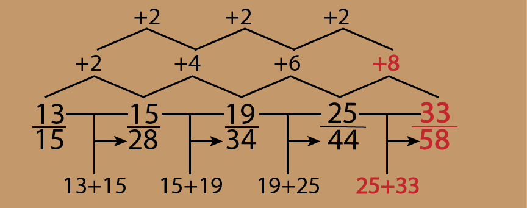
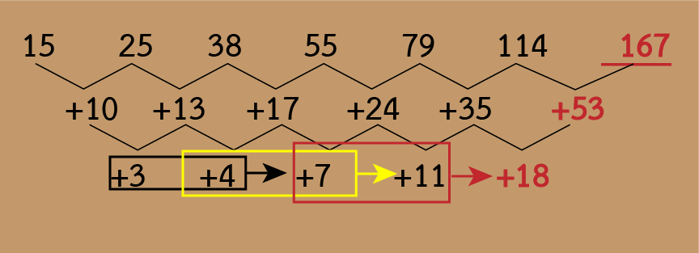
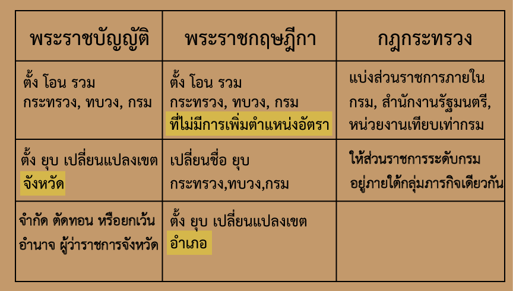

(เกณฑ์ผ่าน 60%)
การเรียงประโยค
คำสั่ง: ข้อ 1-5 จงพิจารณาข้อความในตัวเลือก 1. ถึง 4. แล้วจัดเรียงลําดับให้ถูกต้อง
ข้อ 1. ข้อความใดอยู่ลำดับที่ 3
- แต่ในระบบการมีส่วนร่วม จะเปิดโอกาสให้สมาชิกทุกคนได้แสดงความคิดเห็น
- โดยปกติ การกําหนดนโยบายจะกำหนดโดยผู้บริหารระดับสูง
- จากนั้นจะถ่ายทอดมอบหมายไปยังบุคลากร ระดับ ต่าง ๆ ขององค์กร
- ซึ่งวิธีการเช่นนี้มักจะปฏิบัติกันโดยทั่วไปในระบบราชการ
ตอบ ข้อความที่ 4
เรียงข้อความได้ดังนี้ 2 - 3 - 4 - 1
โดยปกติ การกําหนดนโยบายจะกำหนดโดยผู้บริหารระดับสูง (2)
จากนั้นจะถ่ายทอดมอบหมายไปยังบุคลากร ระดับ ต่าง ๆ ขององค์กร (3)
ซึ่งวิธีการเช่นนี้มักจะปฏิบัติกันโดยทั่วไปในระบบราชการ (4)
แต่ในระบบการมีส่วนร่วม จะเปิดโอกาสให้สมาชิกทุกคนได้แสดงความคิดเห็น (1)
ข้อสังเกต
เป็นประโยค 2 ประโยค ที่เชื่อมกันด้วยคำว่า แต่
แสดงให้เห็นความขัดแย้งกัน เกี่ยวกับการกำหนดนโยบายในระบบราชการ และการกำหนดนโยบายแบบมีส่วนร่วม
การกำหนดนโยบาย .... ซึ่ง (ขยายคำว่า การกำหนดนโยบายโดยผู้บริหาร)..... แต่ (การกำหนดนโยบาย)ในระบบการมีส่วนร่วม .....
ข้อ 2. ข้อความใดอยู่ลำดับที่ 4
- เงินลงทุนจึงไม่จําเป็นต้องพึ่งเงินออมในประเทศเท่านั้น
- เงินทุนจากต่างประเทศถือเป็นปัจจัยสําคัญในการพัฒนาเศรษฐกิจ
- หากหวังพึ่งเพียงเงินออมในประเทศอย่างเดียว อาจทำให้โครงการหลายโครงการ ไม่เกิดขึ้น
- อีกทั้งช่วยผ่อนคลายข้อจํากัดในการพัฒนาเศรฐกิจของประเทศอันเนื่องมาจากการขาดแคลนเงินทุน
ตอบ 1
เรียงข้อความได้ดังนี้ 2 – 4 – 3 - 1
เงินทุนจากต่างประเทศถือเป็นปัจจัยสําคัญในการพัฒนาเศรษฐกิจ (2)
อีกทั้งช่วยผ่อนคลายข้อจํากัดในการพัฒนาเศรฐกิจของประเทศอันเนื่องมาจากการขาดแคลนเงินทุน (4)
หากหวังพึ่งเพียงเงินออมในประเทศอย่างเดียว อาจทำให้โครงการหลายโครงการ ไม่เกิดขึ้น (3)
เงินลงทุนจึงไม่จําเป็นต้องพึ่งเงินออมในประเทศเท่านั้น (1)
เงินทุนจากต่างประเทศ... อีกทั้ง (เงินทุนจากต่างประเทศ)... หาก.... (ข้อสรุป)เงินลงทุนจึง...
ข้อ 3. ข้อความใดอยู่ลําดับที่ 2
- เปรียบเสมือนตราหรือเครื่องหมายประจำตัว ของสิ่งของต่าง ๆ
- และเป็นหลักฐานยืนยันการเป็นเจ้าของกรรมสิทธิ์ ตามกฎหมาย
- ที่กำหนดให้แทนสิ่งนั้นๆ เพื่อให้ง่ายต่อการจดจำ
- ในปัจจุบัน คำว่า "สัญลักษณ์" เข้ามามีบทบาทในสังคมไทยมากขึ้น
ตอบ 1.
เรียงข้อความได้ดังนี้ ... 4 – 1 – 3 – 2
ในปัจจุบัน คำว่า "สัญลักษณ์" เข้ามามีบทบาทในสังคมไทยมากขึ้น (4)
เปรียบเสมือนตราหรือเครื่องหมายประจำตัว ของสิ่งของต่าง ๆ (1)
ที่กำหนดให้แทนสิ่งนั้นๆ เพื่อให้ง่ายต่อการจดจำ (3)
และเป็นหลักฐานยืนยันการเป็นเจ้าของกรรมสิทธิ์ ตามกฎหมาย (2)
ข้อ 4. ข้อความใดอยู่ลำดับที่ 4
- โดยมีปัจจัยจากสภาพแวดล้อม มลพิษ สารเคมี ฝุ่นละอองและเชื้อโรค
- ความเจ็บป่วยที่เกิดขึ้นกับคนเรามีสาเหตุสำคัญอย่างหนึ่งมาจากการที่ร่างกายและจิตใจเสียสมดุล
- รวมถึงการดำเนินชีวิตประจำวันที่มีความเร่งรีบ แข่งขัน
- ทำให้เกิดผลต่อจิตใจ เช่น ความเครียด ความวิตกกังวล นอนไม่หลับ หรือซึมเศร้า
ตอบ 4.
เรียงข้อความได้ดังนี้ 2 – 1 – 3 - 4
ความเจ็บป่วยที่เกิดขึ้นกับคนเรามีสาเหตุสำคัญอย่างหนึ่งมาจากการที่ร่างกายและจิตใจเสียสมดุล (2)
โดยมีปัจจัยจากสภาพแวดล้อม มลพิษ สารเคมี ฝุ่นละอองและเชื้อโรค (1)
รวมถึงการดำเนินชีวิตประจำวันที่มีความเร่งรีบ แข่งขัน (3)
ทำให้เกิดผลต่อจิตใจ เช่น ความเครียด ความวิตกกังวล นอนไม่หลับ หรือซึมเศร้า (4)
ใจความสำคัญคือ เรื่องสาเหตุของความเจ็บป่วย ว่า มีสาเหตุมาจากสภาพแวดล้อมและความรีบเร่งในการดำเนินชีวิต
ประโยคสุดท้ายเป็นการสรุปผลว่า ทำให้เป็นสาเหตุของความเจ็บป่วยได้อย่างไร
ข้อ 5. ข้อความใดอยู่ลําดับที่ 3
- เพราะนอกจากจะมีความฉลาดแล้ว ในปัจจุบัน AI ยังมีระบบความคิดและการตัดสินใจเป็นของตัวเอง
- นั่นอาจรวมไปถึงการเกิดความรู้สึก เฉกเช่นเดียวกับมนุษย์อีกด้วย
- ความฉลาดของ AI คือผลสะท้อนความสำเร็จแห่งนวัตกรรมอันกำเนิดมาจากสติปัญญาของมนุษย์
- หากแต่ชีวิตของผู้ให้กำเนิดอาจถูกสั่นคลอนด้วยความสามารถอันไร้เทียมทานของเหล่า AI
ตอบ 1.
เรียงข้อความได้ดังนี้ 3 – 4 – 1 – 2
ความฉลาดของ AI คือผลสะท้อนความสำเร็จแห่งนวัตกรรมอันกำเนิดมาจากสติปัญญาของมนุษย์ (3)
หากแต่ชีวิตของผู้ให้กำเนิดอาจถูกสั่นคลอนด้วยความสามารถอันไร้เทียมทานของเหล่า AI (4)
เพราะนอกจากจะมีความฉลาดแล้ว ในปัจจุบัน AI ยังมีระบบความคิดและการตัดสินใจเป็นของตัวเอง (1)
นั่นอาจรวมไปถึงการเกิดความรู้สึก เฉกเช่นเดียวกับมนุษย์อีกด้วย (2)
ข้อสังเกต
ข้อความที่จะขึ้นต้นประโยคได้ มีข้อความเดียวคือ ข้อ 3 เพราะเป็นคำนาม
ถ้าดูความโดยรวม จะเห็นว่า เป็นเรื่องเกี่ยวกับ AI และอันตรายของ AI ต่อมนุษย์
ข้อความที่ 1 และ 2 เป็นส่วนขยายให้เห็นถึงอันตรายของ AI ต่อมนุษย์
ความเข้าใจภาษา
คำสั่ง: ข้อ 6 - 15 อ่านข้อความแล้วตอบคำถาม
ข้อ 6.
ถั่วงอกเป็นผักที่ใคร ๆ ก็รู้จักเป็นอย่างดี เนื่องจากสามารถหาซื้อได้ง่าย มีราคาที่ไม่สูง และสามารถนำมาปรุงอาหารได้ค่อนข้างหลากหลาย รวมถึงการที่ถั่วงอกนั้นเป็นผักที่มี สารอาหารและประโยชน์อยู่มากมาย จึงทำให้ถั่วงอกเป็นผักที่มีผู้นิยมบริโภคกันเป็นจำนวนมาก
สาระสำคัญของข้อความนี้ คืออะไร
ใจความสำคัญของข้อความนี้ อยู่ที่ประโยคสุดท้าย เป็นการสรุปข้อความก่อนหน้านี้
ข้อ 7.
ถึงแม้มนุษย์ใช้เวลากับการนอนประมาณ 1 ในสามของเวลาหรือชีวิต แต่การนอนเป็นสิ่งที่มักถูกละเลย อาจเพราะการนอนติดตัวเรามาแต่กำเนิด โดยปกติเราจะไม่รู้สึกว่าการนอนมีความสำคัญ จนกระทั่งเมื่อเกิดปัญหาการนอนขึ้นในรูปแบบใดแบบหนึ่ง เช่น นอนหลับยากต้องพลิกไปมาบนที่นอน นอนหลับๆ ตื่นๆ ตื่นกลางดึกแล้วหลับต่อไม่ได้ ตื่นเช้ากว่าปกติ และไปรบกวนช่วงกลางวัน เริ่มตั้งแต่ตื่นมาไม่สดชื่น เกิดความง่วง อ่อนเพลีย อารมณ์หงุดหงิด ความจำไม่ดี การดำเนินชีวิตประจำวันและการเรียนเสียไป ปัจจุบันยังพบด้วยว่าการนอนไม่หลับ หรือนอนหลับไม่เพียงพอ อาจสัมพันธ์กับการเกิดโรคระบบหัวใจและหลอดเลือด โรคเบาหวาน โรคอ้วน มะเร็ง และโรคซึมเศร้า เป็นต้น
ข้อใดกล่าวได้สอดคล้องกับใจความสำคัญของบทความข้างต้น มากที่สุด
ตอบ ข้อ 1
ใจความสำคัญของบทความนี้ เป็นเรื่องการละเลยไม่เห็นความสำคัญของการนอน
ตัวเลือกข้ออื่น ๆ เกี่ยวข้องกับใจความสำคัญน้อยกว่า
ข้อ 8.
ภาวะโลกร้อน คือ การที่อุณหภูมิเฉลี่ยของโลกเพิ่มขึ้นจากภาวะเรือนกระจก ซึ่งมีต้นเหตุจากการที่มนุษย์ ได้เพิ่มปริมาณก๊าซคาร์บอนไดออกไซด์ จากการเผาไหม้เชื้อเพลิงต่าง ๆ การขนส่ง และการผลิตในโรงงานอุตสาหกรรม มากขึ้น นอกจากนั้น มนุษย์เรายังได้เพิ่มก๊าซ กลุ่มไนตรัสออกไซด์ และคลอโรฟลูโรคาร์บอน (CFC) พร้อม ๆ กับการตัดและทำลายป่าไม้จำนวนมหาศาล เพื่อสร้างสิ่งอำนวยความสะดวกให้แก่มนุษย์ ทำให้กลไกในการดึงเอาก๊าซคาร์บอนไดออกไซด์ ออกไปจากระบบบรรยากาศ ถูกลดทอนประสิทธิภาพลง และในที่สุดสิ่งต่าง ๆ ที่เราได้กระทำต่อโลก ได้หวนกลับมาสู่เราในลักษณะของ ภาวะโลกร้อน
ข้อใดสรุปได้สอดคล้องกับข้อความข้างต้น มากที่สุด
ตอบ ข้อ 2
ในบทความพูดถึงการเพิ่มปริมาณก๊าซที่ทำให้เกิดภาวะเรือนกระจก เพราะมนุษย์ ต้องการสร้างสิ่งอำนวยความสะดวกให้แก่ตนเอง อันเป็นผลทำให้เกิดก๊าซเรือนกระจก ซึ่งเป็นเหตุแห่งโลกร้อน
ข้อ 3 ไม่ถูกเพราะ บทความพูดไว้อย่างชัดเจนว่า การทก๊าชคาร์บอนไดออกไซด์เพิ่มขึ้น เป็นเพราะฝีมือมนุษย์ ไม่ใช่เกิดขึ้นเองตามธรรมชาติ
ข้อ 9.
พื้นที่บริเวณกรุงเทพมหานครในปัจจุบัน เดิมเป็นที่ตั้งของเมืองธนบุรีศรีมหาสมุทร ชาวต่างชาติเรียกกันว่า "บางกอก" มาตั้งแต่สมัยกรุงศรีอยุธยา เป็นเส้นทางออกสู่ทะเล และติดต่อค้าขายกับอาณาจักรต่าง ๆ เป็นเมืองหน้าด่านขนอน คอยดูแลเก็บภาษีกับเรือสินค้าทุกลำ ที่ผ่านเข้าออก ส่วนบริเวณปากน้ำตรงอ่าวไทย เรียกกันว่า "นิวอัมสเตอร์ดัม" มีชุมชนใหญ่และโกดังของชาวต่างประเทศ สำหรับพักสินค้า ปัจจุบันคือพื้นที่บริเวณอำเภอพระประแดง
พื้นที่บริเวณอำเภอพระประแดง แต่เดิมเรียกว่าอะไร
ตอบ ข้อ 4
ส่วนบริเวณปากน้ำตรงอ่าวไทย เรียกกันว่า "นิวอัมสเตอร์ดัม" (มีชุมชนใหญ่และโกดังของชาวต่างประเทศ สำหรับพักสินค้า) ปัจจุบันคือพื้นที่บริเวณอำเภอพระประแดง
ข้อ 10.
การรู้หนังสือมีบทบาทสําคัญต่อการพัฒนาเศรษฐกิจและสังคมเป็นอย่างมาก จึงเป็นหน้าที่ของรัฐบาลทุกประเทศ โดยเฉพาะประเทศที่กําลังพัฒนาประเทศในโลกที่สาม ที่จะต้องแสวงหาแนวทางให้ประชาชนได้รู้หนังสือเพิ่มมากขึ้น และอย่างต่อเนื่อง เพราะความไม่รู้ จะเป็นอุปสรรคต่อความเจริญของมนุษย์ ดังนั้นรัฐบาลจึงต้องมีนโยบาย ที่แน่นอน ชัดเจนและต่อเนื่อง ในการให้ประชาชนรู้หนังสือ ถึงขั้นใช้การได้ คือสามารถอ่านออก เขียนได้ คิดเลขเป็น และนําเอาความรู้ไปใช้ได้
ข้อใดคือความ ความคิดสําคัญของเรื่องนี้
โครงสร้างของข้อความคือ การพูดถึงสาเหตุ แล้วมาสรุปที่ผล เป็นการให้เหตุผลว่า ทำไม รัฐจึงต้องมีนโยบายที่ชัดเจนในการจัดให้ประชาชนรู้หนังสือ ถึงระดับใช้การได้
(เนื่องจาก) ......... ดังนั้น ............
ข้อ 11.
ตลาดผู้สูงวัยถือเป็นตลาดที่ท้าทาย เพราะเป็นกลุ่มที่มีกำลังซื้อสูง มีความพร้อมในการใช้จ่าย แต่ผู้ทำธุรกิจจำเป็นต้องเข้าใจนิสัย และความต้องการที่หลากหลาย และพร้อมจะปรับเปลี่ยนอยู่ตลอดเวลา ของคนกลุ่มนี้ให้ได้ โดยภาคธุรกิจไทยมีศักยภาพ ในการก้าวขึ้นมาเป็นแนวหน้าเรื่องสุขภาพ เพียงแต่ต้องทำความเข้าใจการย่างก้าวทางธุรกิจ ให้สอดคล้องกับช่วงวัยของผู้บริโภค
ข้อใด กล่าวได้สอดคล้องกับข้อความข้างต้น มากที่สุด
ใจความสำคัญของข้อความนี้ คือ ต้องการสื่อสารถึงผู้ประกอบการทางธุรกิจ โดยเฉพาะธุกรกิจด้านสุขภาพ ให้ตระหนักถึงตลาดผู้สูงวัย ซึ่งผู้เขียนคิดว่า ยังคงต้องปรับปรุงในด้านนี้
ข้อ 12.
โครงสร้างประชากรที่เปลี่ยนไปส่งผลให้ความจำเป็นที่ต้องบริโภคสินค้าและบริการด้านสุขภาพมีสูงขึ้น ถึงแม้จะมีรายได้เพิ่มมากขึ้น แต่ก็ไม่เพียงพอต่อการบริโภค จนไม่สามารถเกื้อหนุนผู้สูงวัยได้ ผู้สูงวัยจึงต้องถ่ายโอนสินทรัพย์มาใช้เพื่อดำรงชีวิต เพื่อแก้ปัญหานี้ “การออมเงินก่อนเข้าวัยเกษียณอายุ” จึงมีความสำคัญและเป็นสิ่งที่ภาครัฐต้องช่วยส่งเสริมให้ประชากรไทยเริ่มดูแลสุขภาพกาย และสุขภาพทางการเงิน ตั้งแต่อายุ 30 ปี
ข้อความข้างต้น สอดคล้องกับข้อความในข้อใด มากที่สุด
จุดประสงค์หลักของข้อความที่อ่าน ก็เพื่อให้เหตุผลและความจำเป็น ที่รัฐจะต้องจัดทำโครงการ “การออมเงินก่อนเข้าวัยเกษียณอายุ”
ข้อ 1 และ ข้อ 2 ไม่ใช่สาระสำคัญ เป็นเพียงเหตุผลประกอบเท่านั้น
ข้อ 13.
หน้าที่ของผู้นํา คือต้องสร้างแรงบันดาลใจ ให้ประชาชนเห็นด้วยกับวิสัยทัศน์ ที่กําหนดขึ้น โดยจูงใจให้ประชาชน เห็นว่าประเทศเรากําลังก้าวไปข้างหน้า เพื่อให้ประชาชนเปลี่ยนแปลงลักษณะนิสัย และค่านิยมดั้งเดิม หันมายึดค่านิยมใหม่ ตามพลังแห่งวิสัยทัศน์ และแสดงออกเป็นการกระทํา ในภาคปฏิบัติต่อไป
ข้อใด คือใจความสำคัญของข้อความข้างต้น
สาระสำคัญของข้อความนี้ คือ หน้าที่ของผู้นํา คือต้องสร้างแรงบันดาลใจ ให้ประชาชนเห็นด้วยกับวิสัยทัศน์ ตรงกับข้อ 3 มากที่สุด
ข้อ 14.
รถยนต์ไฟฟ้า เพิ่งจะเริ่มเป็นที่นิยมเมื่อไม่กี่ปีที่ผ่านมา และถูกพูดถึงอยู่บ่อยครั้ง เมื่อมีการเผชิญกับปัญหาโลกร้อน มลพิษทางอากาศ PM2.5 และทิศทางพลังงานโลกที่มุ่งไปสู่การผลิต และการใช้พลังงานที่มีการปลดปล่อยก๊าซเรือนกระจกแบบสุทธิเป็นศูนย์ จึงทำให้รัฐบาลจากหลายประเทศทั่วโลก รวมถึงประเทศไทย สนับสนุนให้ประชาชนหันมาใช้รถยนต์ไฟฟ้า
สาระของข้อความนี้ คือข้อใด
ข้อความนี้เน้นเรื่องรถยนต์ไฟฟ้า โดยได้อธิบายถึงเหตุผลของความนิยมการใช้รถยนต์ไฟฟ้า ว่ามีเหตุผลมาจาก ภาวะวิกฤติทางสภาพสิ่งแวดล้อมและการสนับสนุนของรัฐบาล
ข้อ 15.
ปัจจุบันมีนวัตกรรมใหม่ ๆ เกิดขึ้นตลอดเวลา มีการคิดค้นปัญญาประดิษฐ์ ที่สามารถตอบคำถามได้ทุกคำถาม และสามารถแปลได้หลายภาษา โดยเฉพาะการแปลภาษา สามารถทำได้ทั้งแบบทันทีทันใด (real-time) และแบบป้อนคำสั่งให้แปล สามารถทำงานแทนมนุษย์ได้ ความรู้จึงอยู่แค่ปลายนิ้ว ถ้าเป็นแบบนี้ แล้วยังจำเป็นที่จะต้องเรียนภาษากันอยู่หรือไม่
สาระสําคัญของข้อความนี้คือข้อใด?
ใจความสำคัญเป็นการเสนอความคิดเห็นของผู้เขียนว่า ยังจำเป็นอยู่หรือไม่ที่จะต้องเรียนภาษาอื่น
ความสามารถในการคิดวิเคราะห์เชิงนามธรรม
อุปมาอุปไมย
ข้อ 16. คณิตศาสตร์ : สถิติ :: ? : ?
สถิติ เป็นศาสตร์สาขาย่อยของ คณิตศาสตร์
ชีวเคมี เป็นศาสตร์สาขาย่อยของ เคมี
ข้อ 17. ฝอยทอง : มะนาว :: ? : ?
ฝอยทอง มีรสหวาน มะนาว มีรสเปรี้ยว
เค้ก มีรสหวาน มะดัน มีรสเปรี้ยว
ข้อ 18. กันสาด : ฝน :: ? : ?
กันสาด สำหรับกัน ฝน
มุ้งลวด สำหรับกัน ยุง
หน้าต่าง ใช้กันลมด้วย แต่ก็ยังใช้เปิดรับลมด้วยเช่นกัน มุ้งลวดกับยุงจึงถูกมากกว่า
ม่าน ใช้กันแดด แต่สลับหน้า-หลัง กับ โจทย์ มุ้งลวด :: ยุง จึงถูกมากกว่า
ข้อ 19. ขม : หวาน :: ? : ?
คำตรงข้าม
ข้อ 20. ลายแทง : สมบัติ :: ? : ?
ลายแทง ใช้ขุดหา สมบัติ
ลายมือ ใช้ทำนาย โชคชะตา
การสรุปความจากภาษา
คำสั่ง ในแต่ละข้อจะประกอบด้วยเงื่อนไขหรือข้อมูลที่กำหนดให้ และข้อสรุปเป็นคู่ ๆ จากเงื่อนไขนั้น ให้ศึกษาเงื่อนไขที่กำหนดให้ก่อน แล้วจึงอาศัยความรู้ที่ได้จากเงื่อนไขดังกล่าวมาใช้พิจารณา ข้อสรุปทั้งสองของแต่ละข้อ แล้วทำตอบลงในกระดาษคำตอบ โดยยึดหลักในการทำตอบดังนี้

เงื่อนไข สำหรับข้อ 21-25
เงื่อนไข
หนี่ง สอง สาม และสี่ เลี้ยงสัตว์และปลูกดอกไม้ไม่ซ้ำกัน มีสัตว์ดังนี้ ปลาทอง หนูตะเภา เต่า แมว และมีดอกไม้ คือ อัญชัน ชงโค กุหลาบ และดาวเรือง โดยมีรายละเอียด ดังนี้
(1) สี่ปลูกกุหลาบ
(2) สามปลูกชงโค
(3) สองไม่เลี้ยงหนูตะเภาและปลาทอง
(4) หนึ่งเลี้ยงหนูตะเภา
(ข้อสอบเสมือนจริง ก.พ. รอบ paper&pencil 20 พ.ย. 2565)
นำข้อมูลมาสร้างตารางเพื่อเป็นกรอบในการหาคำตอบ
| คน | ดอกไม้ | สัตว์เลี้ยง |
|---|---|---|
| หนึ่ง | ||
| สอง | ||
| สาม | ชงโค | |
| สี่ | กุหลาบ |
จาก (3) สองไม่เลี้ยงหนูตะเภาและปลาทอง
แสดงว่า สองอาจจะเลี้ยง เต่า หรือ แมว
| คน | ดอกไม้ | สัตว์เลี้ยง |
|---|---|---|
| หนึ่ง | ||
| สอง | เต่า | แมว | |
| สาม | ชงโค | |
| สี่ | กุหลาบ |
จาก (4) หนึ่งเลี้ยงหนูตะเภา
| คน | ดอกไม้ | สัตว์เลี้ยง |
|---|---|---|
| หนึ่ง | หนูตะเภา | |
| สอง | เต่า | แมว | |
| สาม | ชงโค | |
| สี่ | กุหลาบ |
มีดอกไม้เหลืออยู่คือ อัญชันและดาวเรือง มีคนอยู่สองคนที่ยังไม่รู้ว่าปลูกดอกไม้อะไร จึงสรุปได้ไม่แน่ชัดว่าทั้งสองคนที่เหลือ ว่าใครจะปลูกอัญชัน หรือ ดาวเรือง
| คน | ดอกไม้ | สัตว์เลี้ยง |
|---|---|---|
| หนึ่ง | อัญชัน | ดาวเรือง | หนูตะเภา |
| สอง | อัญชัน | ดาวเรือง | เต่า | แมว |
| สาม | ชงโค | |
| สี่ | กุหลาบ |
มีสัตว์เลี้ยงที่ยังไม่รู้ว่าใครจะเลี้ยง คือ เต่า แมว และปลาทอง
แต่เรารู้แล้วว่า สอง อาจจะเลี้ยง เต่าหรือแมว แต่ สามกับสี่ ไม่รู้ว่าเลี้ยงอะไร แต่ที่แน่ ๆ คือไม่ได้เลี้ยงหนูตะเภา เพราะ หนึ่งเป็นคนเลี้ยง
| คน | ดอกไม้ | สัตว์เลี้ยง |
|---|---|---|
| หนึ่ง | อัญชัน | ดาวเรือง | หนูตะเภา |
| สอง | อัญชัน | ดาวเรือง | เต่า | แมว |
| สาม | ชงโค | เต่า | แมว | ปลาทอง |
| สี่ | กุหลาบ | เต่า | แมว | ปลาทอง |
ข้อ 21.
ข้อสรุปที่ 1: หนึ่งปลูกดาวเรือง (ไม่แน่ชัด)
ข้อสรุปที่ 2: หนึ่งเลี้ยงหนูตะเภาและสามเลี้ยงปลาทอง (ไม่แน่ชัด)
ข้อ 22.
ข้อสรุปที่ 1 สองเลี้ยงเต่า (ไม่แน่ชัด)
ข้อสรุปที่ 2 สามเลี้ยงแมว (ไม่แน่ชัด)
ข้อ 23.
ข้อสรุปที่ 1: สามปลูกชงโค (จริง)
ข้อสรุปที่ 2: หนึ่งเลี้ยงหนูตะเภาหรือสี่ปลูกชงโค (จริง)
ข้อ 24.
ข้อสรุปที่ 1 สามปลูกชงโค(จริง)
ข้อสรุปที่ 2 สองเลี้ยงเต่า (ไม่แน่ชัด)
ข้อ 25.
ข้อสรุปที่ 1: ถ้าหนึ่งเลี้ยงแมวแล้วสามจะปลูกกุหลาบ(จริง)
ข้อสรุปที่ 2: สี่ปลูกกุหลาบ (จริง)
กรณี ข้อสรุป ถ้า... แล้ว.... จะเป็นเท็จ กรณีเดียว คือ ข้อความข้างหน้าเป็นจริง ข้อความข้างหลังเป็นเท็จ
การตัดสิน จริงหรือเท็จ จากข้อความที่มีตัวเชื่อม
ถ้าเป็นการเชื่อมข้อความโดยใช้ตัวเชื่อม "และ", "หรือ" หรือ "ถ้า... แล้ว..."
วิธีการดูว่า ข้อความทั้งสองข้อความ เมื่อเชื่อมเข้าด้วยกันแล้ว ผลที่ได้ จะเป็นจริง หรือเป็นเท็จ ให้พิจารณาแต่ละข้อความ ดังนี้
- ถ้าเชื่อมด้วย "และ" จะเป็นจริง ก็ต่อเมื่อข้อความทั้งสอง เป็นจริง
แต่ถ้ามีตัวใดตัวหนึ่งไม่ทราบแน่ชัด ก็จะส่งผลให้ได้ ไม่แน่ชัด - ถ้าเชื่อมด้วย "หรือ" จะเป็นจริง ก็ต่อเมื่อมีข้อความใดข้อความหนึ่ง เป็นจริง
แต่ถ้ามีตัวใดตัวหนึ่งไม่ทราบแน่ชัด ก็จะส่งผลให้ได้ ไม่แน่ชัด - ถ้าเชื่อมด้วย "ถ้า... แล้ว..." จะเป็นเท็จ กรณีเดียว คือ ข้อความข้างหน้าเป็นจริง และข้อความข้างหลัง เป็นเท็จ
แต่ถ้ามีตัวใดตัวหนึ่งไม่ทราบแน่ชัด ก็จะส่งผลให้ได้ ไม่แน่ชัด
สมมุติให้ข้อความแรก เป็นตัว p และข้อความที่สอง เป็นตัว q
| p | q | p และ q | p หรือ q | ถ้า p แล้ว q |
| จริง | จริง | จริง | จริง | จริง |
| จริง | เท็จ | เท็จ | จริง | เท็จ |
| เท็จ | จริง | เท็จ | จริง | จริง |
| เท็จ | เท็จ | เท็จ | เท็จ | จริง |

ข้อ 26.
เงื่อนไข
4A = 2B < C ≯ D
D + 2 > C < 2F ≯ G
(ทุกตัวแปร มีค่ามากกว่าศูนย์)
ข้อสรุปที่ 2: 2A > 3G (เท็จ)
ปรับเครื่องหมายในเงื่อนไข จาก ≯ เป็น ≤
4A = 2B < C ≤ D
D + 2 > C < 2F ≤ G
(ทุกตัวแปร มีค่ามากกว่าศูนย์)
ข้อสรุปที่ 1: 2B < D + 50 (จริง)
จาก B ไป D ผ่าน C ตามเงื่อนไข คือ
2B < C < D + 2
ยุบรวม
2B < D + 2
เหมือนข้อสรุปข้างหนึ่งแล้ว อีกข้าง เอา D + 50 มาเทียบได้
2B < (D + 2) < (D + 50)
ยุบรวม
2B < (D + 50)
ข้อสรุปที่ 1 เป็นจริง
ข้อสรุปที่ 2: 2A > 3G (เท็จ)
จาก A ไป G ผ่าน C ตามเงื่อนไข คือ
4A = 2B < C < 2F ≤ G
ยุบรวม
4A < G
เอา 3 คูณตลอด เพื่อให้ได้ 3G เหมือนข้อสรุป
12A < 3G
เหมือนข้อสรุปข้างหนึ่งแล้ว อีกข้าง เอา 2A มาเทียบได้
2A < 12A < 3G
ยุบรวม
2A < 3G
ข้อสรุปที่ 2 เป็นเท็จ
ข้อสรุปที่ 1 เป็นจริง
ข้อสรุปที่ 2 เป็นเท็จ
ตอบ ข้อ 4 ข้อสรุปทั้งสอง สรุปต่างกัน
ข้อ 27.
เงื่อนไข
4A = 2B < C ≯ D
D + 2 > C < 2F ≯ G
(ทุกตัวแปร มีค่ามากกว่าศูนย์)
ข้อสรุปที่ 2: 3A < 2D (จริง)
ปรับเครื่องหมายในเงื่อนไข จาก ≯ เป็น ≤
4A = 2B < C ≤ D
D + 2 > C < 2F ≤ G
(ทุกตัวแปร มีค่ามากกว่าศูนย์)
ข้อสรุปที่ 1: B + C < 2F (ไม่แน่)
กระจายข้อสรุป เพื่อการพิสูจน์เป็น
B + C < F + F
เราจะเปรียบเทียบ ระหว่าง B กับ F และ C กับ F
เปรียบเทียบ ระหว่าง B กับ F
จาก B ไป F ผ่าน C ตามเงื่อนไข คือ
2B < C < 2F
ยุบรวม
2B < 2F
เอา 2 หารตลอด
B < F --------- (1)
เปรียบเทียบ ระหว่าง C กับ F
จาก C ไป F ตามเงื่อนไข คือ
C < 2F
ได้ C ข้างหนึ่งแล้ว อีกข้างเอา F มาเทียบ
C < 2F > F
ระหว่าง C ไป F มีเครื่องหมายสวนทางกัน จึงสรุปไม่ได้
ระหว่าง C กับ F สรุปไม่ได้ --------- (2)
จาก (1) และ (2) จึงสรุปว่า
ข้อสรุปที่ 1: B + C < 2F สรุปได้ไม่แน่ชัด
ข้อสรุปที่ 2: 3A < 2D (จริง)
จาก A ไป D ตามเงื่อนไขคือ
4A = 2B < C ≤ D
ยุบรวม
4A < D
เอา 2 คูณตลอด เพื่อให้ได้ 2D ตามข้อสรุป
8A < 2D
ได้ 2D ข้างหนึ่งแล้ว อีกข้าง เอา 3A มาเทียบได้
3A < 8A < 2D
ยุบรวม
3A < 2D
ข้อสรุปที่ 2: จริง
ข้อสรุปที่ 1: ไม่แน่ชัด
ข้อสรุปที่ 2: จริง
ตอบ ข้อ 4 ข้อสรุปทั้งสอง มีผลการสรุปต่างกัน
ข้อ 28.
เงื่อนไข
4A = 2B < C ≯ D
D + 2 > C < 2F ≯ G
(ทุกตัวแปร มีค่ามากกว่าศูนย์)
ข้อสรุปที่ 2: C = D (ไม่แน่ชัด)
ปรับเครื่องหมายในเงื่อนไข จาก ≯ เป็น ≤
4A = 2B < C ≤ D
D + 2 > C < 2F ≤ G
(ทุกตัวแปร มีค่ามากกว่าศูนย์)
ข้อสรุปที่ 1: F > D
จาก F ไป D ผ่าน C ตามเงื่อนไข คือ
2F > C ≤ D
ระหว่าง F และ D พบว่ามีเครื่องหมายสวนทางกัน จึงสรุปได้ไม่แน่ชัด
ข้อสรุปที่ 1: ไม่แน่ชัด
ข้อสรุปที่ 2: C = D
จาก C ไป D ตามเงื่อนไข คือ
C ≤ D
ข้อสรุปที่ 2 ไม่แน่ชัด เพราะ ข้อสรุปไม่ครอบคลุมเงื่อนไข
ข้อสรุปที่ 1: ไม่แน่ชัด
ข้อสรุปที่ 2: ไม่แน่ชัด
ตอบ ข้อ 3 สรุปได้ไม่แน่ชัดทั้งสองข้อ
ข้อ 29.
เงื่อนไข
4A = 2B < C ≯ D
D + 2 > C < 2F ≯ G
(ทุกตัวแปร มีค่ามากกว่าศูนย์)
ข้อสรุปที่ 2: 4F > 5A (จริง)
ปรับเครื่องหมายในเงื่อนไข จาก ≯ เป็น ≤
4A = 2B < C ≤ D
D + 2 > C < 2F ≤ G
(ทุกตัวแปร มีค่ามากกว่าศูนย์)
ข้อสรุปที่ 1: A > B + C (เท็จ)
เปรียบเทียบระหว่าง A กับ B + C
จากเงื่อนไข จาก A ไป B คือ
4A = 2B
เอา 2 หาร เพื่อให้เหลือ B
2A = B
เอา A มาเทียบ
A < 2A = B
ยุบรวม
A < B ---- (1)
จากเงื่อนไข จาก A ไป C คือ
4A = 2B < C
ยุบรวม
4A < C
เอา A มาเทียบ
A < 4A < C
ยุบรวม
A < C ----- (2)
(1)+(2)
A + A < B + C
2A < B + C
ได้ (B + C) ข้างหนึ่งแล้ว อีกข้าง เอา A มาเทียบได้
A < 2A < B + C
ยุบรวม
A < B + C
ข้อสรุปที่ 1 เป็นเท็จ
ข้อสรุปที่ 2: 4F > 5A
จาก F ไป A ตามเงื่อนไขคือ
2F > C > 2B = 4A
ยุบรวม เครื่องหมาย > มีลำดับความสำคัญสูงสุด
2F > 4A
เอา 2 คูณตลอด เพื่อให้ได้ 4F เหมือนข้อสรุป
4F > 8A
ได้ 4F เหมือนข้อสรุปข้างหนึ่งแล้ว อีกข้างเอา 5A มาเทียบได้
4F > 8A > 5A
ยุบรวม
4F > 5A
ข้อสรุปที่ 2 เป็นจริง
ข้อสรุปที่ 1 เป็นเท็จ
ข้อสรุปที่ 2 เป็นจริง
ตอบ ข้อ 4 ข้อสรุปทั้งสองมีผลสรุปต่างกัน
ข้อ 30.
เงื่อนไข
4A = 2B < C ≯ D
D + 2 > C < 2F ≯ G
(ทุกตัวแปร มีค่ามากกว่าศูนย์)
ข้อสรุปที่ 2: A มีค่าน้อยสุด (จริง)
ปรับเครื่องหมายในเงื่อนไข จาก ≯ เป็น ≤
4A = 2B < C ≤ D
D + 2 > C < 2F ≤ G
(ทุกตัวแปร มีค่ามากกว่าศูนย์)
ข้อสรุปที่ 1: D > G
จาก D ไป G ตามเงื่อนไข คือ
D ≥ C < 2F ≤ G
ระหว่าง D ไป G มีเครื่องหมายสวนทางกัน จึงสรุปไม่ได้
ข้อสรุปที่ 1 สรุปได้ไม่แน่ชัด
ข้อสรุปที่ 2: A มีค่าน้อยสุด
เงื่อนไขบรรทัดบน A มีค่าน้อยที่สุด
A น้อยกว่า D
4A = 2B < C ≤ D
ยุบรวม
4A < D
เอา A มาเทียบ
A < 4A < D
ยุบรวม
A < D
A น้อยกว่า C
4A = 2B < C
ยุบรวม
4A < C
เอา A มาเทียบ
A < 4A < C
ยุบรวม
A < C
A น้อยกว่า B
4A = 2B
เอา 2 หาร เพื่อให้ได้ B
(ตรงนี้เป็นตัวอย่างที่ดีที่ต้องทำข้างหนึ่งให้เหมือนข้อสรุปก่อน แล้วจึงเทียบ ถ้าเอา A มาเทียบเลย ผลที่ได้ จะเป็นสรุปไม่ได้ ซึ่งไม่ถูกต้อง)
2A = B
เอา A มาเทียบ
A < 2A < B
ยุบรวม
A < B
เงื่อนไขบรรทัดล่าง
เรารู้ว่า D มากกว่า A ดังนั้น D + 2 ก็ต้องมากกว่า A
เงื่อนไขบรรทัดล่าง จึงตัด D ออกไปได้
เงื่อนไขบรรทัดล่าง
C น้อยกว่า G
จากเงื่อนไขบรรทัดล่าง
C < 2F ≤ G
ยุบรวม
C < G
เราทราบว่า A < C และ C < G
ดังนั้น
A < G
C กับ F ไม่รู้ว่าใครมาก-น้อยกว่ากัน
จากเงื่อนไขบรรทัดล่าง
C < 2F
ได้ C ข้างหนึ่งตามต้องการแล้ว อีกข้างเอา F มาเทียบได้
C < 2F > F
สรุปไม่ได้ เนื่องจากมีเครื่องหมายสวนทางกัน
อย่าเพิ่งด่วนสรุป
ลองดูระหว่าง A กับ F
จาก A ไป F ตามเงื่อนไข ผ่าน C คือ
4A = 2B < C < 2F
ยุบรวม
4A < 2F
เอา 2 หารตลอดเพื่อให้ได้ F ตามที่ต้องการ
2A < F
ได้ F ข้างหนึ่งแล้ว อีกข้าง เอา A มาเทียบได้
A < 2A < F
ยุบรวม
A < F
โดยสรุป เราได้พิสูจน์แล้วว่า
A < D
A < C
A < B
A < G
และ
A < F
ดังนั้น จึงสรุปได้ว่า A มีค่าน้อยที่สุด
ข้อสรุปที่ 2 จึงเป็นจริง
ข้อสรุปที่ 1 ไม่แน่ชัด
ข้อสรุปที่ 2 จริง
ตอบ ข้อ 4
ข้อ 31.
เงื่อนไข
A = (B + C) = (D + E)
C ≮ F > G ≯ H
(ทุกตัวอักษรมีค่ามากกว่าศูนย์)
ข้อสรุปที่ 1: A < F (เท็จ)
ข้อสรุปที่ 2: G ≥ H (ไม่แน่ชัด)
ปรับเครื่องหมาย ≮ เป็น ≥ และ ≯ เป็น ≤
A = (B + C) = (D + E)
C ≥ F > G ≤ H
ข้อสรุปที่ 1: A < F
จาก A ไป F ตามเงื่อนไข คือ
A = (B + C) > C ≥ F
ยุบรวม
A > F
ข้อสรุปที่ 1 เป็นเท็จ
ข้อสรุปที่ 2: G ≥ H
จาก G ไป H ตามเงื่อนไข คือ
G ≤ H
ข้อสรุปที่ 2 สรุปได้ไม่แน่ชัด เพราะ ข้อสรุปไม่ครอบคลุมเงื่อนไข ครอบคลุมเฉพาะเท่ากันเท่านั้น
ข้อสรุปที่ 1 เท็จ
ข้อสรุปที่ 2 ไม่แน่ชัด
ตอบ ข้อ 4 ข้อสรุปทั้งสองสรุปต่างกัน
ข้อ 32.
เงื่อนไข
A = (B + C) = (D + E)
C ≮ F > G ≯ H
(ทุกตัวอักษรมีค่ามากกว่าศูนย์)
ข้อสรุปที่ 1: (B + D) = (C + E) (ไม่แน่ชัด)
ข้อสรุปที่ 2: (D + E + F) > A (จริง)
ปรับเครื่องหมาย ≮ เป็น ≥ และ ≯ เป็น ≤
A = (B + C) = (D + E)
C ≥ F > G ≤ H
ข้อสรุปที่ 1: (B + D) = (C + E) (ไม่แน่ชัด)
จากเงื่อนไขคือ
A = (B + C) = (D + E)
B, C, D และ E อาจจะมากกว่ากัน หรือน้อยกว่ากัน หรือ เท่ากัน ก็ได้ เช่น
กรณี B น้อยกว่า D และ C มากกว่า E
สมมุติให้ A=10; B=3; C=7; D=4; E=6
10 = (3 + 7) = (4 + 6)
(B + D) = (C + E) เป็นเท็จ เพราะ 3 + 4 ไม่เท่ากับ 7 + 6
กรณี B = D และ C = E
สมมุติให้ A=10; B=5; C=5; D=5; E=5
10 = (5 + 5) = (5 + 5)
(B + D) = (C + E) เป็นจริง เพราะ 5 + 5 เท่ากับ 5 + 5
ข้อสรุปที่ 1 จึงสรุปได้ไม่แน่ชัด เพราะ ข้อสรุปที่ว่า (B + D) = (C + E) อาจจะเป็นจริง หรือเป็นเท็จ ก็ได้ ไม่แน่ชัด
ข้อสรุปที่ 2: (D + E + F) > A (จริง) จาก (D + E) ไป A ตามเงื่อนไขคือ
(D + E) = (B + C) = A
ยุบรวม
(D + E) = A
เหมือนข้อสรุปข้างหนึ่งแล้ว อีกข้าง เอา (D + E + F) มาเทียบได้
(D + E + F) > (D + E) = A
ยุบรวม เครื่องหมาย > มีลำดับความสำคัญสูงกว่า เครื่องหมาย =
(D + E + F) > A
ข้อสรุปที่ 2 เป็นจริง
ข้อสรุปที่ 2 ไม่แน่ชัด
ข้อสรุปที่ 2 จริง
ตอบข้อ 4
ข้อ 33.
A = (B + C) = (D + E)
C ≮ F > G ≯ H
(ทุกตัวอักษรมีค่ามากกว่าศูนย์)
ข้อสรุปที่ 1: A < 5C
ข้อสรุปที่ 2: 2C > 3H
ปรับเครื่องหมาย ≮ เป็น ≥ และ ≯ เป็น ≤
A = (B + C) = (D + E)
C ≥ F > G ≤ H
ข้อสรุปที่ 1: A < 5C
จาก A ไป C ตามเงื่อนไขคือ
A = (B + C) > C
ยุบรวม
A > C
เอา 5C มาเทียบ
A > C < 5C
ข้อสรุปที่ 1 สรุปได้ไม่แน่ชัด เพราะมีเครื่องหมายสวนทางกัน
ข้อสรุปที่ 2: 2C > 3H
จาก C ไป H ตามเงื่อนไขคือ
C ≥ F > G ≤ H
ข้อสรุปที่ 2 สรุปได้ไม่แน่ชัด เพราะมีเครื่องหมายสวนทางกัน
ข้อสรุปที่ 1 สรุปได้ไม่แน่ชัด
ข้อสรุปที่ 2 สรุปได้ไม่แน่ชัด
ตอบ ข้อ 3
ข้อ 34.
A = (B + C) = (D + E)
C ≮ F > G ≯ H
(ทุกตัวอักษรมีค่ามากกว่าศูนย์)
ข้อสรุปที่ 1: 3(B + C) < D + E (เท็จ)
ข้อสรุปที่ 2: F ≥ C (สรุปไม่ได้)
ปรับเครื่องหมาย ≮ เป็น ≥ และ ≯ เป็น ≤
A = (B + C) = (D + E)
C ≥ F > G ≤ H
ข้อสรุปที่ 1: 3(B + C) < D + E (เท็จ)
จาก (B + C) ไป D + E ตามเงื่อนไขคือ
(B + C) = (D + E)
เอา 3(B + C) มาเทียบ
3(B + C) > (B + C) = (D + E)
ยุบรวม
3(B + C) > (D + E)
ข้อสรุปที่ 1 เป็นเท็จ
ข้อสรุปที่ 2: F ≥ C (สรุปไม่ได้) จาก F ไป C ตามเงื่อนไขคือ
F ≤ C
ข้อสรุปที่ 2 สรุปได้ไม่แน่ชัด เนื่องจากข้อสรุปไม่ครอบคลุมเงื่อนไขทั้งหมด
ข้อสรุปที่ 1 เท็จ
ข้อสรุปที่ 2 ไม่แน่ชัด
ตอบ ข้อ 4
ข้อ 35.
A = (B + C) = (D + E)
C ≮ F > G ≯ H
(ทุกตัวอักษรมีค่ามากกว่าศูนย์)
ข้อสรุปที่ 1: (B + C + F) > (D + E + G) (จริง)
ข้อสรุปที่ 2: A > G (จริง)
ปรับเครื่องหมาย ≮ เป็น ≥
ปรับเครื่องหมาย ≮ เป็น ≥ และ ≯ เป็น ≤
A = (B + C) = (D + E)
C ≥ F > G ≤ H
ข้อสรุปที่ 1: (B + C + F) > (D + E + G) (จริง)
จาก B + C ไป D + E ตามเงื่อนไขคือ
(B + C) = (D + E) ---- (1) จาก F ไป G ตามเงื่อนไขคือ
F > G ---- (2)
(1)+(2)
เครื่องหมาย > มีลำดับความสำคัญสูงกว่า เครื่องหมาย =
(B + C) + F > (D + E) + G
(B + C + F) > (D + E + G)
ข้อสรุปที่ 1 เป็นจริง
ข้อสรุปที่ 2: A > G (จริง)
จาก A ไป G ตามเงื่อนไขคือ
A = (B + C) > C ≥ F > G
ยุบรวม
A > G
ข้อสรุปที่ 2 เป็นจริง
ข้อสรุปที่ 1 จริง
ข้อสรุปที่ 2 จริง
ตอบ ข้อ 1
ความสามารถในการคิดวิเคราะห์เชิงปริมาณ
อนุกรม
คำสั่ง จงเลือกคำตอบจากตัวเลือก 1. – 4. มาเติมลงในช่องว่าง เพื่อให้ได้อนุกรมที่มีความสัมพันธ์ต่อเนื่องกันอย่างสมเหตุสมผลมากที่สุด
2 1 2 4 5 20 7 8 56 10 11 ........
2 11 5 44 8 97 11 ..........
ข้อ 38.
13/15 15/28 19/34 25/44 .............
ส่วนตัวหลัง = เศษตัวหน้า + เศษตัวเอง

ข้อ 39.
15 25 38 55 79 114 ........
(ข้อสอบเสมือนจริง กพ 31 มี.ค. 2566)

ข้อ 40.
-3 0 2 7 9 16 18 27 ........
(ข้อสอบเสมือนจริง กพ e-Exam 2566)
โจทย์คณิตศาสตร์
คำสั่ง จงเลือกคำตอบที่ถูกที่สุดจากตัวเลือกที่กำหนดให้
ข้อ 41.
(ข้อสอบเสมือนจริง กพ e-Exam มี.ค. 2567)
ถ้า 3 * 2 = 24 และ
9 * 2 = 72 แล้ว
5 * 6 = ?
หาทรัพยากร ของ 3 * 2 = 24
เป้าหมายคือ 24
3 + 2 = 5 --- (1)
3 - 2 = 1 --- (2)
3 × 2 = 6 --- (3)
32 + 22 = 13 --- (4)
33 + 22 = 31 --- (5)
32 = 27 --- (6)
จากผลทั้งหมด จะเห็นว่า 6 กับ 24 พอหารกันได้ ส่วนตัวอื่น ๆ เช่น 5, 1 หรือ 13 เดี๋ยวค่อยว่ากัน
ถ้าเอา (3) × 4 จะได้ 24 พอดี
สูตรคือ
(หน้า × หลัง) × 3 = ผลลัพธ์
ลองใช้กับอีกชุด
(9 × 2) × 4 = 72
สูตรนี้ ใช้ได้
(หน้า × หลัง) × 4 = ผลลัพธ์
(5 × 6) × 4 = 120
ข้อ 42.
(ข้อสอบเสมือนจริง กพ e-Exam มี.ค. 2567)
อีก 12 ปี อัตราส่วนอายุของพ่อ : อายุของลูก จะเป็น 3 : 1 ถ้าปัจจุบัน พ่อมีอายุมากกว่าลูก 34 ปี อยากทราบว่า ปัจจุบันลูกมีอายุเท่าไร
วิธีทำ
สมมติให้ปัจจุบันลูกมีอายุ A ปี
พ่อจะมีอายุ = A+34 ปี
อีก 12 ปีข้างหน้า
ลูกมีอายุ = A+12 ปี
พ่อมีอายุ = (A+34)+12 = A+46 ปี
อัตราส่วนอายุ พ่อ : ลูก = 3 : 1
ดังนั้น
3/1 = A+46/A+12
คูณไขว้
3(A+12) = 1(A+46)
3A+36 = A+46
3A-A = 46-36
A = 46-36/2 = 10/2 = 5
ดังนั้น ลูกมีอายุ = 5 ขวบ
ตอบ 5 ขวบ
ข้อ 43.
(ข้อสอบเสมือนจริง กพ e-Exam มี.ค. 2567)
ปราณีมีเงิน 6,500 บาท ซื้อกระเป๋าที่ลดราคาจากป้าย 10% หลังจากที่ซื้อกระเป๋า เธอมีเงินเหลือจำนวน 2,000 บาท อยากทราบว่า กระเป๋าใบนั้นติดป้ายราคาไว้กี่บาท?
ปราณีซื้อกระเป๋าใบนี้เป็นเงิน = 6,500 - 2,000 = 4,500 บาท
กระเป๋าติดป้ายลดราคา 10%
เทียบบัญญัติไตรยางค์
ขายจริง 90 บาท ติดป้ายไว้ = 100 บาท
ขายจริง 1 บาท ติดป้ายไว้ = 100/90 บาท
ขายจริง 4,500 บาท ติดป้ายไว้ = 100/90 × 4,500 = 5,000 บาท
ตอบ 5,000 บาท
ข้อ 44.
(ข้อสอบเสมือนจริง กพ e-Exam มี.ค. 2567)
2/3 เท่า ของเส้นทแยงมุมของรูปสี่เหลี่ยมจตุรัสรูปหนึ่ง มีค่าเท่ากับ 8 หน่วย จงหาพื้นที่ของสี่เหลี่ยมจตุรัสรูปนี้
สูตรการหาค่าเฉลี่ยพื้นที่สี่เหลี่ยมจตุรัส
พื้นที่ = 1/2 (ผลคูณของเส้นทแยงมุม)
สมมุติให้เส้นทแยงมุมยาว = A หน่วย
แทนค่าจากโจทย์
2/3A = 8 หน่วย
A = 3/2 × 8 = 12 หน่วย
พื้นที่ของสี่เหลี่ยมรูปนี้ = 1/2 (12 × 12) = 144/2 = 72 หน่วย
ตอบ 72 หน่วย
ข้อ 45.
(ข้อสอบเสมือนจริง กพ e-Exam มี.ค. 2567)
กำหนดให้ a > b และ c เป็นเลขจำนวนเต็มที่มีค่ามากกว่าศูนย์ ถ้า a+b > a+c แล้ว ข้อใดต่อไปนี้ ถูกต้อง
วิธีคิด
ถ้า a+b > a+c
เอา a ลบออกทั้งสองข้าง
a+b-a > a+c-a
b > c
ดังนั้น
b2 > c2
ตอบ ข้อ 2
การวิเคราะห์ข้อมูล
คำสั่ง ให้ศึกษาและทำความเข้าใจกับข้อมูลซึ่งเป็นตารางที่กำหนดให้ แล้วจึงอาศัยความรู้ความเข้าใจ จากข้อมูลนั้น ๆ เป็นหลักในการทำตอบ
สำหรับ ข้อ 46-50
ยอดจดทะเบียนรถยนต์ใหม่ของไทย ปี 2564-2566
| ประเภทรถยนต์จำแนกตามเชื้อเพลิง | 2564 | 2565 | 2566 |
|---|---|---|---|
| รถน้ำมัน % Yoy* | 489,510 -7.3 | 543,072 10.9 | 481,609 -11.3 |
| PHEV(รถปลั๊กอินไฮบริด) % Yoy | 7,060 NA** | 11,116 57.5 | 11,692 5.2 |
| HEV (รถไฮบริด) % Yoy | 34,339 21.0 | 62,137 81.0 | 84,474 35.9 |
| BEV (รถยนต์ไฟฟ้า) % Yoy | 1,967 41.3 | ?? 388.9 | 76,538 695.9 |
| แก๊ส (CNG/LPG) % Yoy | 1,922 -59.1 | 2,780 44.6 | 3,547 27.6 |
| รวมทั้งหมด % Yoy | 534,798 -4.9 | ?? 17.6 | 657,860 4.6 |
** ไม่มีข้อมูลยอดจดทะเบียนรถ PHEV ปี 2563
ที่มา: กรมการขนส่งทางบก
ในปี 2565 มีการจดทะเบียนรถยนต์ไฟฟ้า จำนวนกี่คัน
หาคำตอบได้จากสูตรการหาความเปลี่ยนแปลง โดยเทียบระหว่างปี 2564 กับ ปี 2565
สูตร
อัตราเปลี่ยนแปลง = ปี ปลาย (2565) - ปี ต้น(2564)/ปี ต้น(2564) x 100
สมมุติให้มีรถจดทะเบียนปี 2565 = A คัน
ปรับตัวเลขเพื่อให้คิดง่าย
การจดทะเบียนปี 2564 จาก 1967 ปรับเป็น 2,000 คัน
อัตราการเปลี่ยนแปลง (%Yoy) จาก 388.9 ปรับเป็น 400
แทนค่าในสูตร
(เป็นค่าโดยประมาณ จึงใช้เครื่องหมาย ≈)
400 ≈ A - 2,000/2,000 x 100
(400)(2,000) ≈ (A - 2,000)(100)
(400)(2,000)/100 ≈ (A - 2,000)
800,000/100 = (A - 2,000)
8,000 ≈ A - 2,000
A ≈ 8,000 + 2,000 ≈ 10,000 คัน
คำตอบใกล้เคียงกับ 9,617 คัน มากที่สุด
ตอบ ข้อ 2
การจดทะเบียนรถยนต์ไฟฟ้าในปี 2566 คิดเป็นกี่เท่าของ การจดทะเบียนรถยนต์ไฟฟ้าในปี 2564
การจดทะเบียนรถยนต์ไฟฟ้าในปี 2564 = 1,967 คิดเป็น 2,000 คัน
การจดทะเบียนรถยนต์ไฟฟ้าในปี 2564 = 76,538 คิดเป็น 76,500 คัน
ปี 2566 คิดเป็นกี่เท่าของปี 2564
จำนวนเท่า ≈ 76,500/2,000 = 38.2 เท่า
ค่าที่ใกล้เคียงที่สุดคือ 38.91
ตอบ ข้อ 2
การจดทะเบียนรถทุกชนิด ในปี 2566 คิดเป็นร้อยละเท่าไร ของการจดทะเบียนรถทุกชนิด ในปี 2565
1) ปรับตัวเลขเพื่อให้คิดง่ายขึ้น โดยตัดออก 2 ตำแหน่ง ถ้าเกิน 5 ให้ปัดขึ้น
2) รถยนต์ไฟฟ้า ปี 2565 ให้เอาคำตอบที่ถูกต้อง ในข้อก่อน คือ 9,617 มาใช้
การจดทะเบียนปี 2566 ≈ 6,579
การจดทะเบียนปี 2565 ≈ 5431+111+621+96+28 ≈ 6,287
6,579 คิดเป็นร้อยละเท่าไรของ 6,287 ≈ 6,579/6,287 × 100
ปรับตัวเลขอีกเพื่อให้คิดง่าย
คิดเป็นจำนวนเท่า (ร้อยละ) ≈ 66/63 × 100 ≈ 104
คำตอบที่ใกล้เคียงที่สุดคือ 104.6%
ตอบ 104.6%
อัตราส่วนการจดทะเบียนรถ ไฮบริด ในปี 2565 : การจดทะเบียนรถ ไฮบริด ในปี 2566 โดยประมาณ คือข้อใด
การจดทะเบียนรถ ไฮบริด ในปี 2565 = 62,137 คิดเป็น 62
การจดทะเบียนรถ ไฮบริด ในปี 2566 = 84,474 คิดเป็น 84
อัตราส่วน 2565 : 2566 ≈ 62 : 84
เอา 62 หาร ทั้งสองข้าง เพื่อให้ได้อัตราส่วน 1 : ??
อัตราส่วน 2565 : 2566 ≈ 62/62 : 84/62
อัตราส่วน ≈ 1 : 1.35
คำตอบที่ใกล้เคียงที่สุด คือ 1 : 1.36
ตอบ 1 : 1.36
ในปี 2566 รถชนิดใด มียอดขายมากที่สุด
ตอบ รถน้ำมัน มียอดขาย 481,609 คัน
(เกณฑ์ผ่าน 50%)
Instructions: Select the most appropriate choice for each item.
Alex calls Maria to discuss the details of a software purchase.
| Alex: | Hello, Maria speaking. Maria answers the call and identifies herself. |
| Maria: | Hi Alex, how can I assist assist = ช่วยเหลือ you today? |
| Alex: | Hi Maria, I'm interested in purchasing the software license software license = ใบอนุญาตซอฟต์แวร์ for your product. |
| Maria: | Sure, we offer offer = เสนอ a single license for 15,000 baht. |
| Alex: | That's a bit expensive expensive = แพง . Can you provide a discount discount = ส่วนลด ? I'm planning to buy multiple licenses. |
| Maria: | Unfortunately, we can't reduce reduce = ลด the price at this time. But, we can offer free technical support technical support = การสนับสนุนทางเทคนิค for a year. |
| Alex: | I appreciate the offer, Maria, but I'm looking for a better deal deal = ข้อตกลง . I think I'll hold off hold off = ชะลอการตัดสินใจ on the purchase for now. |
| Maria: | I understand, Alex. If you change your mind or need anything else, please let me know. |
ข้อ 51.
What does Alex request from Maria?
Alex asks, "Can you provide a discount?"
ขอลดราคาสินค้าลงได้ไหม
ข้อ 52.
Why is Alex not satisfied with Maria's offer?
Alex says, "I'm looking for a better deal."
หมายความว่า เขาอยากได้ข้อเสนอที่ดีกว่านี้
ข้อ 53.
How does Maria respond to Alex's request for a discount?
Maria says, "We can offer free technical support for a year."
เราไม่ลดราคาแต่เราจะให้การสนับสนุนทางเทคนิคฟรีเป็นเวลาหนึ่งปี
ข้อ 54.
What is Alex's decision regarding the software license?
Alex says, "I think I'll hold off on the purchase for now."
หมายความว่า เขายังไม่ซื้อในตอนนี้
ข้อ 55.
How does Maria respond to Alex's decision not to buy the software license?
Maria says, "I understand, Alex. If you change your mind or need anything else, please let me know."
Maria เคารพการตัดสินใจของ Alex
Vocabulary
ข้อ 56.
What is the
roof = หลังคา
foundation = รากฐาน
window = หน้าต่าง
door = ประตู
The foundation is the bottom most part of a house.
ข้อ 57.
If someone wants to
end = สิ้นสุด
start = เริ่มต้น
abandon = ละทิ้ง
neglect = ละเลย
start คือคำที่ใช้กับ initiate ได้ดีที่สุด
ข้อ 58.
In a
runner = นักวิ่ง
swimmer = นักว่ายน้ำ
cyclist = นักปั่นจักรยาน
dancer = นักเต้น
นักวิ่งคือคนที่เข้าร่วมมาราธอน
ข้อ 59.
The act of
ignore = เพิกเฉย
examine = ตรวจสอบ
reject = ปฏิเสธ
overlook = มองข้าม
examine ใช้กับ carefully reviewing ได้ดีที่สุด
ข้อ 60.
A: Would you like to _______ your order now?
B: Yes, I would.
cancel = ยกเลิก
delay = ชะลอ
place = สั่ง (เช่น order)
forget = ลืม
place คือคำที่เหมาะสมที่สุดในประโยคนี้
Structure
Instructions: Choose the correct answer.
ข้อ 61.
Last April, Sandra ____ from Paris to stay with her mother.
Last April = เมื่อเดือนเมษายนที่ผ่านมา แสดงว่าเป็นเหตุการณ์ที่เกิดขึ้นในอดีต ต้องใช้เป็น Past Tense.
ถ้าเป็น Since last April, ... ตั้งแต่เมื่อเดือนเมษาที่แล้ว ... อย่างนี้ ต้องเป็น Present Perfect (has moved)
ข้อ 62.
Suda didn't go to the party. If she ______ too busy, she would have gone to the party.
If ในกรณีที่เป็นไปไม่ได้ คือ สุดาไม่ได้ไปงาน และงานก็ผ่านมาแล้ว คนเราย้อนเวลาไม่ได้
กรณีนี้ จะใช้เป็น past perfect + would have กริยาช่อง 3
ข้อ 63.
Either David or David ____ to work on the annual budget report.
either ... or ถือเป็นเอกพจน์ ต้องใช้คำว่า has
has to = must = ต้อง
ข้อ 64.
Suda didn't know _____ to cook chicken curry so she looked it up in a cook book.
how to cook chicken curry = วิธีการแกงไก่
look it up = ค้นหา(วิธีแกงไก่)
cook book = ตำราปรุงอาหาร
ข้อ 65.
I'm interested in ________ new languages.
I'm interested in learning new languages
โดยปกติ ฉัน(ชอบ)สนใจเรียนภาษา(อื่น)ใหม่ ๆ
กริยาที่ตามหลัง preposition (เช่น คำว่า in, on, at, under เป็นต้น) โดยทั่วไปจะเติม ing คือเป็น gerunds เช่น
Reading
สำหรับ ข้อ 66-70
Instructions: Read the following letter and select the best answer for each item.
trap = กับดัก
ข้อ 66.
What is the main idea of the passage?
ใจความสำคัญ คือข้อใด
ประโยคคำตอบ
เป็นเรื่องเกี่ยวกับจำนวนสัตว์น้ำที่ลดลง(decrease in fish) เนื่องมาจากการจับปลาที่มากเกินไป (too much fishing) และปัญหามลภาวะ (pollution)
ข้อ 67.
What do the bamboo poles from fish traps in Songkhla Lake show?
เสาไม้ไผ่แสดงให้เห็นถึงอะไร
คำตอบ
การจับปลาที่มากเกินไป (too much fishing) และผลกระทบต่อสัตว์น้ำ (impact on water animals)
ข้อ 68.
Which part of Songkhla Lake is mainly affected by pollution from households and factories?
บริเวณไหนของทะเลสาบที่ได้รับผลกระทบจากมลภาวะมากที่สุด
คำตอบ
บริเวณตอนบน (upper part)
ข้อ 69.
How much has the amount of fish caught overnight dropped over the last 20 years according to the passage?
ปริมาณปลาที่จับได้ในแต่ละคืน ลดลงเท่าไร ในรอบ 20 ปี
ประโยคคำตอบ
the amount of fish caught overnight has gone down from 1.46 kg to 890 grams over the last 20 years
ข้อ 70.
What can we guess about the future of Songkhla Lake if the Fisheries Department's plans work?
ถ้ากรมประมงทำตามแผนสำเร็จ คาดว่าจะเกิดอะไรขึ้น
คำตอบ
ปริมาณปลาและหอย จะเพิ่มขึ้น
He ran back to his mother, half-dressed, and pleaded, “Mom, can you help me find my homework? I can’t be late!” His mother looked at him with a confused expression and then started to laugh softly. The boy stopped, puzzled. “Why are you laughing, Mama? This is serious!” he exclaimed.
His mother gently placed her hands on his shoulders and said, “Sweetie, today is Sunday. There is no school today.”
สำหรับ ข้อ 71-75
Instructions: Read the following passage and select the best answer for each item.
A young boy ran up to his mother and said, “Mama, what time is it?” Mother replied, “It’s almost eight.” The young boy said to himself, “I must be
He ran back to his mother,
His mother gently placed her hands on his shoulders and said, “Sweetie, today is Sunday. There is no school today.”
ข้อ 71.
Why did the young boy panic when he asked his mother for the time?
ทำไมเด็กคนนั้นจึงท่าทางตกใจตอนที่ถามเวลากับแม่..
panic = ตื่นเต้น ตกใจ
a school day = วันที่ต้องไปโรงเรียน คือ วันจันทร์-ศุกร์
late = สาย, ไม่ทันเวลา
ข้อ 72.
What did the boy realize when he went back to his room?
เมื่อเด็กชายคนนั้น กลับมาถึงห้องแล้ว นึกอะไรได้
ยังทำการบ้านไม่เสร็จ
ข้อ 73.
How did the mother react when the boy pleaded for help with his homework?
แม่ของเด็กทำอย่างไร เมื่อถูกขอให้ช่วยเรื่องการบ้าน
หัวเราะเบา ๆ.
scold = ดุด่า
ignore = เฉยเมย ไม่ทำอะไร
ข้อ 74.
What did the mother say to calm the boy?
แม่พูดว่าอะไรเพื่อปลอบเด็กคนนั้น
ข้อ 75.
What emotion did the boy feel after his mother told him it was Sunday?
เด็กคนนั้นรู้สึกอย่างไร เมื่อแม่บอกว่าวันนี้เป็นวันอาทิตย์
Relief = โล่งอก
Anger = โกรธแค้น
Confusion = งง
Disappointment = ผิดหวัง
คำสั่ง จงเลือกคำตอบที่ถูกต้องที่สุด
(เกณฑ์ผ่าน 60%)
ข้อ 76.
ตามพระราชบัญญัติระเบียบบริหารราชการแผ่นดิน พ.ศ. 2534 ข้อใดกล่าวถูกต้องที่สุด เกี่ยวกับสํานักเลขาธิการนายกรัฐมนตรี
มาตรา 13
สํานักเลขาธิการนายกรัฐมนตรี มีอํานาจหน้าที่เกี่ยวกับราชการทางการเมือง มีเลขาธิการนายกรัฐมนตรีเป็นผู้บังคับบัญชาข้าราชการ และรับผิดชอบในการปฏิบัติราชการขึ้นตรงต่อนายกรัฐมนตรีและให้มีรองเลขาธิการนายกรัฐมนตรีฝ่าย การเมืองและรองเลขาธิการนายกรัฐมนตรีฝ่ายบริหาร เป็นผู้ช่วยสั่งและปฏิบัติราชการ และจะให้มีผู้ช่วยเลขาธิการนายกรัฐมนตรี เป็นผู้ช่วยสั่ง และปฏิบัติราชการด้วยก็ได้
ให้เลขาธิการนายกรัฐมนตรีและรองเลขาธิการนายกรัฐมนตรีฝ่ายการเมือง เป็นข้าราชการการเมือง และให้รองเลขาธิการนายกรัฐมนตรีฝ่ายบริหาร และผู้ช่วยเลขาธิการนายกรัฐมนตรี เป็นข้าราชการพลเรือนสามัญ
ข้อ 77.
การตั้งอำเภอใหม่ ให้ตราเป็นกฎหมายใด
(พ.ร.บ. ระเบียบบริหารราชการแผ่นดิน)
มาตรา ๖๑ ในจังหวัดหนึ่งให้มีหน่วยราชการบริหาร รองจากจังหวัดเรียกว่า อำเภอ การตั้ง ยุบ และเปลี่ยนเขตอำเภอ ให้ตราเป็นพระราชกฤษฎีกา
ตั้ง ยุบ เปลี่ยนแปลง อำเภอ → พระราชกฤษฎีกาตั้ง ยุบ เปลี่ยนแปลง จังหวัด → พระราชบัญญัติ

ข้อ 78.
การแบ่งส่วนราชการของจังหวัด คือข้อใด
มาตรา ๖๐ ให้แบ่งส่วนราชการของจังหวัดดังนี้
(๑) สำนักงานจังหวัด มีหน้าที่เกี่ยวกับราชการทั่วไป และการวางแผนพัฒนาจังหวัดของจังหวัดนั้น มี หัวหน้าสำนักงานจังหวัดเป็นผู้บังคับบัญชาข้าราชการ และรับผิดชอบในการปฏิบัติราชการของสำนักงานจังหวัด
(๒) ส่วนต่าง ๆ ซึ่งกระทรวง ทบวง กรม ได้ตั้งขึ้น มีหน้าที่เกี่ยวกับราชการของกระทรวง ทบวง กรม นั้น ๆ มีหัวหน้าส่วนราชการประจำจังหวัดนั้น ๆ เป็นผู้ปกครองบังคับบัญชารับผิดชอบ
ข้อ 79.
การตั้ง ยุบ และเปลี่ยนเขตอำเภอ ให้ตราเป็นกฎหมายใด
มาตรา ๖๑
ในจังหวัดหนึ่ง ให้มีหน่วยราชการบริหารรองจากจังหวัด
เรียกว่าอำเภอ
การตั้ง ยุบ และเปลี่ยนเขตอำเภอ ให้ตราเป็นพระราชกฤษฎีกา
ข้อ 80.
ข้อใด มีตําแหน่งเป็นข้าราชการพลเรือนสามัญ ตาม พรบ. ระเบียบบริหารราชการแผ่นดิน พ.ศ. 2534
มาตรา 14 สํานักเลขาธิการคณะรัฐมนตรีมีอํานาจหน้าที่เกี่ยวกับราชการของคณะรัฐมนตรี รัฐสภา และราชการในพระองค์ มีเลขาธิการคณะรัฐมนตรีเป็นผู้บังคับบัญชาข้าราชการ และรับผิดชอบในการปฏิบัติราชการ ขึ้นตรงต่อนายกรัฐมนตรี และให้มี รองเลขาธิการคณะรัฐมนตรีเป็นผู้ช่วยสั่งและปฏิบัติราชการ และจะให้มี ผู้ช่วยเลขาธิการคณะรัฐมนตรี เป็นผู้ช่วยสั่งและปฏิบัติราชการด้วยก็ได้ ให้เลขาธิการคณะรัฐมนตรี รองเลขาธิการคณะรัฐมนตรี และผู้ช่วยเลขาธิการคณะรัฐมนตรี เป็นข้าราชการพลเรือนสามัญ
ระวังอย่าสับสนสำนักนายกรัฐมนตรี มีฐานะเป็นกระทรวง มีนายกรัฐมนตรีเป็นผู้บังคับบัญชาข้าราชการ
สำนักเลขาธิการนายกรัฐมนตรี มีเลขาธิการนายกรัฐมนตรี เป็นผู้บังคับบัญชาข้าราชการ
เลขาธิการนายกรัฐมนตรีและรองเลขาธิการนายกรัฐมนตรีฝ่ายการเมือง เป็นข้าราชการการเมือง
ให้รองเลขาธิการนายกรัฐมนตรีฝ่ายบริหาร และผู้ช่วยเลขาธิการนายกรัฐมนตรี เป็นข้าราชการพลเรือนสามัญ
สํานักเลขาธิการคณะรัฐมนตรี มีเลขาธิการคณะรัฐมนตรี เป็นผู้บังคับบัญชาข้าราชการ
เลขาธิการคณะรัฐมนตรี รองเลขาธิการคณะรัฐมนตรี และผู้ช่วยเลขาธิการคณะรัฐมนตรี เป็น ข้าราชการพลเรือนสามัญ
(พ.ร.บ. ระเบียบบริหารราชการแผ่นดิน)
ข้อ 81.
กรณีการจัดตั้งส่วนราชการขึ้นใหม่ ซึ่งเป็นส่วนราชการส่วนราชการที่เรียกชื่ออย่างอื่น และมีฐานะเป็นกรม ถ้าไม่มีการกําหนดตําแหน่ง หรืออัตราของข้าราชการหรือลูกจ้างเพิ่มขึ้น ให้ตราเป็นกฎหมายใด
มาตรา ๘ ทวิ
การรวมหรือการโอนส่วนราชการตามมาตรา 7 ไม่ว่าจะมีผลเป็นการจัดตั้งส่วนราชการ ขึ้นใหม่หรือไม่ ถ้าไม่มีการกำหนดตำแหน่ง หรืออัตราของข้าราชการ หรือลูกจ้างเพิ่มขึ้น ให้ตราเป็นพระราชกฤษฎีกา
ส่วนราชการตามมาตรา 7 หมายถึง
(1) สำนักนายกรัฐมนตรี
(2) กระทรวง หรือทบวงซึ่งมีฐานะเทียบเท่ากระทรวง
(3) ทบวง ซึ่งสังกัดสำนักนายกรัฐมนตรีหรือกระทรวง
(4) กรม หรือส่วนราชการที่เรียกชื่ออย่างอื่นและมีฐานะเป็นกรม ซึ่งสังกัดหรือไม่สังกัดสำนัก นายกรัฐมนตรี กระทรวงหรือทบวง
ข้อ 82.
ข้อใด ไม่ใช่ เป้าหมาย ในการบริหารกิจการบ้านเมือง เพื่อประโยชน์สูงสุดของประชาชน ตาม พ.ร.ฎ.การบริหารกิจการบ้านเมืองที่ดี?
มาตรา ๖ การบริหารกิจการบ้านเมืองที่ดี ได้แก่ การบริหารราชการเพื่อบรรลุเป้าหมาย ดังต่อไปนี้
(๑) เกิดประโยชน์สุขของประชาชน
(๒) เกิดผลสัมฤทธิ์ต่อภารกิจของรัฐ
(๓) มีประสิทธิภาพ และเกิดความคุ้มค่า ในเชิงภารกิจของรัฐ
(๔) ไม่มีขั้นตอนการปฏิบัติงานเกินความจำเป็น
(๕) มีการปรับปรุงภารกิจของส่วนราชการ ให้ทันต่อสถานการณ์
(๖) ประชาชนได้รับการอำนวยความสะดวก และได้รับการตอบสนองความต้องการ
(๗) มีการประเมินผลการปฏิบัติราชการ อย่างสม่ำเสมอ
(พ.ร.ฎ.ว่าด้วยหลักเกณฑ์และวิธีการบริหารกิจการบ้านเมืองที่ดี พ.ศ. ๒๕๔๖)
ข้อ 83.
การพัฒนาความรู้ในส่วนราชการ ให้มีลักษณะเป็นองค์การแห่งการเรียนรู้อย่างสม่ำเสมอ เป็นเป้าหมายในข้อใด
หมวด ๓
การบริหารราชการเพื่อให้เกิดผลสัมฤทธิ์ต่อภารกิจของรัฐ
มาตรา ๑๑ ส่วนราชการ มีหน้าที่พัฒนาความรู้ในส่วนราชการ เพื่อให้มีลักษณะเป็นองค์การแห่งการเรียนรู้อย่างสม่ำเสมอ โดยต้องรับรู้ข้อมูลข่าวสาร และสามารถประมวลผลความรู้ในด้านต่างๆ เพื่อนำมาประยุกต์ใช้ในการปฏิบัติราชการ ได้อย่างถูกต้อง รวดเร็ว และเหมาะสมกับสถานการณ์ รวมทั้ง ต้องส่งเสริม และพัฒนาความรู้ความสามารถ สร้างวิสัยทัศน์ และปรับเปลี่ยนทัศนคติ ของข้าราชการในสังกัด ให้เป็นบุคลากรที่มีประสิทธิภาพและมีการเรียนรู้ร่วมกัน ทั้งนี้ เพื่อประโยชน์ในการปฏิบัติราชการของ ส่วนราชการให้สอดคล้องกับ การบริหารราชการ ให้เกิดผลสัมฤทธิ์ตามพระราชกฤษฎีกานี้
ข้อ 84.
ในการปฏิบัติงานราชการ ที่เกี่ยวข้องกับการบริการประชาชน หรือติดต่อประสานงาน ระหว่างส่วนราชการด้วยกัน เพื่ออำนวยความสะดวก และการตอบสนองความต้องการของประชาชน ส่วนราชการต้องกำหนดและประกาศ สิ่งใดให้ประชาชน และข้าราชการทราบเป็นการทั่วไป
หมวด ๗
การอำนวยความสะดวก และการตอบสนองความต้องการของประชาชน
มาตรา ๓๗ ในการปฏิบัติราชการ ที่เกี่ยวข้องกับการบริการประชาชน หรือติดต่อประสานงาน ระหว่างส่วนราชการด้วยกัน ให้ส่วนราชการ กำหนดระยะเวลาแล้วเสร็จของงาน แต่ละงาน และประกาศ ให้ประชาชน และข้าราชการทราบเป็นการทั่วไป ส่วนราชการใด มิได้กำหนดระยะเวลาแล้วเสร็จ ของงานใด และ ก.พ.ร. พิจารณาเห็นว่างานนั้น มีลักษณะที่สามารถกำหนดระยะเวลาแล้วเสร็จได้ หรือส่วนราชการ ได้กำหนดระยะเวลาแล้วเสร็จไว้ แต่ ก.พ.ร. เห็นว่าเป็นระยะเวลาที่ล่าช้าเกินสมควร ก.พ.ร. จะกำหนด เวลาแล้วเสร็จให้ส่วนราชการนั้นต้องปฏิบัติก็ได้
อย่าสับสนกับ เรื่องประสิทธิภาพ และความคุ้มค่าในเชิงภารกิจของรัฐ
มาตรา ๒๐ เพื่อให้การปฏิบัติราชการ ภายในส่วนราชการเป็นไปอย่างมีประสิทธิภาพ ให้ส่วนราชการกำหนดเป้าหมาย แผนการทำงาน ระยะเวลาแล้วเสร็จของงานหรือโครงการ และงบประมาณ ที่จะต้องใช้ในแต่ละงานหรือโครงการ และต้องเผยแพร่ ให้ข้าราชการ และประชาชนทราบทั่วกันด้วย
(พ.ร.ฎ.ว่าด้วยหลักเกณฑ์และวิธีการบริหารกิจการบ้านเมืองที่ดี พ.ศ. ๒๕๔๖)
ข้อ 85.
แผนปฏิบัติราชการของส่วนราชการ ต้องสอดคล้องกับข้อใด
แผนบริหารราชการแผ่นดิน และแผนนิติบัญญัติ ถูกยกเลิกไปแล้ว โดย พ.ร.ฎ.ว่าด้วยหลักเกณฑ์และวิธีการบริหารกิจการบ้านเมืองที่ดี (ฉบับที่ ๒)
เหตุผลในการประกาศใช้ พระราชกฤษฎีกา ว่าด้วยหลักเกณฑ์และวิธีการบริหารกิจการบ้านเมืองที่ดี (ฉบับที่ ๒) คือ โดยที่พระราชกฤษฎีกาว่าด้วยหลักเกณฑ์ และวิธีการบริหารกิจการบ้านเมืองที่ดี พ.ศ. ๒๕๔๖ กำหนดให้คณะรัฐมนตรีและหน่วยงานที่เกี่ยวข้อง จัดให้มีแผนการบริหารราชการแผ่นดินและแผนนิติบัญญัติขึ้น เพื่อเป็นกรอบในการบริหารราชการแผ่นดิน ให้มีความชัดเจน แต่เนื่องจากรัฐธรรมนูญแห่งราชอาณาจักรไทย พุทธศักราช ๒๕๖๐ ได้กำหนดให้รัฐ จัดให้มียุทธศาสตร์ชาติเป็นเป้าหมายการพัฒนาประเทศอย่างยั่งยืน และต่อมาได้มีการตราพระราชบัญญัติ การจัดทำยุทธศาสตร์ชาติ พ.ศ. ๒๕๖๐ และพระราชบัญญัติแผนและขั้นตอนการดำเนินการปฏิรูปประเทศ พ.ศ. ๒๕๖๐ ขึ้น ซึ่งกฎหมายดังกล่าวได้กำหนดให้มีการจัดทำกรอบในการพัฒนาประเทศอย่างยั่งยืนไว้ในรูป ยุทธศาสตร์ชาติซึ่งทุกหน่วยงานต้องปฏิบัติตาม ประกอบกับได้มีการจัดทำแผนการปฏิรูปประเทศเพื่อเป็นกลไก วิธีการ และขั้นตอนการดำเนินการปฏิรูปประเทศในด้านต่าง ๆ ขึ้นแล้ว จึงไม่มีความจำเป็นที่จะต้องจัดทำ แผนการบริหารราชการแผ่นดินและแผนนิติบัญญัติให้ซํ้าซ้อนกันอีก สมควรยกเลิกการจัดทำแผนการบริหารราชการแผ่นดินและแผนนิติบัญญัติ และปรับปรุงการจัดทำแผนปฏิบัติราชการของส่วนราชการให้สอดคล้อง กับยุทธศาสตร์ชาติ แผนแม่บท แผนการปฏิรูปประเทศ แผนพัฒนาเศรษฐกิจและสังคมแห่งชาติ นโยบาย ของคณะรัฐมนตรีที่แถลงต่อรัฐสภา และแผนอื่นที่เกี่ยวข้อง
ข้อ 86.
การแบ่งส่วนราชการ ภายในสำนักงานรัฐมนตรี กรม หรือส่วนราชการที่เรียกชื่ออย่างอื่น และมีฐานะเป็นกรม ให้ตราเป็นกฎหมายใด
มาตรา ๘ ฉ
การแบ่งส่วนราชการ ภายในสำนักงานรัฐมนตรี กรม หรือส่วนราชการที่เรียกชื่ออย่างอื่น และมีฐานะเป็นกรม ให้ออกเป็นกฎกระทรวง และให้ระบุอำนาจหน้าที่ของแต่ละส่วนราชการ ไว้ในกฎกระทรวงด้วย
การรวม,โอน กระทรวง ทบวง กรม ที่ไม่มีการเพิ่มตำแหน่ง → พระราชกฤษฎีกา
การเปลี่ยนชื่อ การยุบ กระทรวง ทบวง กรม → พระราชกฤษฎีกา
การแบ่งส่วนราชการ ภายในสำนักงานรัฐมนตรี กรม → กฎกระทรวง
ข้อ 87.
ในกรณีที่ไม่มีผู้ดํารงตําแหน่งรองปลัดกระทรวง หรือมีแต่ไม่อาจปฏิบัติราชการได้ ปลัดกระทรวงจะแต่งตั้งข้าราชการในกระทรวงซึ่งดำรงตําแหน่งไม่ต่ำกว่าตําแหน่งใด เป็นผู้รักษาราชการแทน
มาตรา ๔๔
ในกรณีที่ไม่มีผู้ดำรงตำแหน่งปลัดกระทรวง หรือมีแต่ไม่อาจปฏิบัติราชการได้ให้รอง ปลัดกระทรวงเป็นผู้รักษาราชการแทน ถ้ามีรองปลัดกระทรวงหลายคน ให้นายกรัฐมนตรีสำหรับสำนัก นายกรัฐมนตรี หรือรัฐมนตรีว่าการกระทรวง แต่งตั้งรองปลัดกระทรวงคนใดคนหนึ่ง เป็นผู้รักษาราชการแทน ถ้าไม่มี ผู้ดำรงตำแหน่งรองปลัดกระทรวง หรือมีแต่ไม่อาจปฏิบัติราชการได้ ให้นายกรัฐมนตรีสำหรับสำนักนายกรัฐมนตรี หรือรัฐมนตรีว่าการกระทรวง แต่งตั้งข้าราชการในกระทรวงซึ่งดำรงตำแหน่งไม่ตํ่ากว่าอธิบดีหรือเทียบเท่าเป็น ผู้รักษาราชการแทน
ในกรณีที่ไม่มีผู้ดำรงตำแหน่งรองปลัดกระทรวง หรือมีแต่ไม่อาจปฏิบัติราชการได้ ปลัดกระทรวงจะ แต่งตั้งข้าราชการในกระทรวงซึ่งดำรงตำแหน่งไม่ตํ่ากว่า ผู้อำนวยการกอง หรือเทียบเท่าเป็นผู้รักษาราชการแทน ก็ได้
(พ.ร.ฎ.ว่าด้วยหลักเกณฑ์และวิธีการบริหารกิจการบ้านเมืองที่ดี พ.ศ. ๒๕๔๖)ข้อ 88.
ข้อใดเป็นคำสั่งทางปกครอง
ก.ก.ต. และ ป.ป.ช. เป็นองค์กรอิสระตามรัฐธรรมนูญ จึงไม่อยู่ในบังคับของ พ.ร.บ.วิธีปฏิบัติราชการทางปกครอง ยกเว้นตามมาตรา 4(2)
หนังสือกรมการปกครองแจ้งเตือนให้นาย ก. ชดใช้ค่าสินไหมทดแทนทางละเมิด เป็นขั้นตอนการปฏิบัติของเจ้าหน้าที่ตามที่กฎหมายกำหนด ก่อนที่เจ้าหน้าที่จะใช้มาตรการบังคับทางปกครองต่อไปเท่านั้น จึงไม่เป็นคำสั่งทางปกครอง (คำพิพากษาศาลปกครองสูงสุด ที่ อ.๑๕๐/๒๕๕๔)
ประกาศรายชื่อผู้ได้รับการบรรจุแต่งตั้ง ของสำนักงานอัยการสูงสุด ไม่ใช่การดำเนินงานตามกระบวนการยุติธรรมทางอาญา จึงเป็นคำสั่งทางปกครอง
แต่ถ้าเป็นเรื่องการพิจารณาพิพากษาคดีของศาล การบังคับคดี เป็นต้น อย่างนี้ ไม่ถือเป็นคำสั่งทางปกครอง เพราะยกเว้นตาม มาตรา ๔ (๔) การพิจารณาพิพากษาคดีของศาล และการดำเนินงานของเจ้าหน้าที่ในกระบวนการพิจารณาคดี การบังคับคดี และการวางทรัพย์
ข้อ 89.
บุคคลในข้อใด มีหน้าที่ออกคําสั่งทางปกครอง ตามพระราชบัญญัติวิธีปฏิบัติราชการทางปกครอง พ.ศ. 2539
มาตรา ๕ ในพระราชบัญญัตินี้
“วิธีปฏิบัติราชการทางปกครอง” หมายความว่า การเตรียมการและการดำเนินการของเจ้าหน้าที่ เพื่อจัดให้มีคำสั่งทางปกครองหรือกฎ และรวมถึงการดำเนินการใด ๆ ในทางปกครอง ตามพระราชบัญญัตินี้
ข้อ 90.
เจ้าหน้าที่ในข้อใด สามารถทำการพิจารณาทางปกครองได้
พักอาศัยอยู่ร่วมกับคู่กรณีในสถานที่เดียวกัน แต่ถ้าไม่ได้อยู่ในลักษณะครัวเรือนเดียวกัน ก็สามารถทำการพิจารณาทางปกครองได้ เช่น อยู่คอนโดเดียวกัน อยู่หอพักเดียวกัน โดยที่ไม่ได้อยู่แบบครอบครัวเดียวกัน เป็นต้น
ในกฎกระทรวง กําหนดกรณีอื่นที่เจ้าหน้าที่จะทําการพิจารณาทางปกครองไม่ได้ พ.ศ. ๒๕๖๖
เจ้าหน้าที่ดังต่อไปนี้จะทําการพิจารณาทางปกครองไม่ได้
- เคยเป็นคู่หมั้นหรือคู่สมรสของคู่กรณี
- เป็นหรือเคยเป็นผู้ซึ่งอยู่กินกันฉันสามีภริยา โดยมิได้จดทะเบียนสมรสกับคู่กรณี
- เป็นหรือเคยเป็นผู้ซึ่งอยู่กินกับคู่กรณีที่เป็นบุคคลเพศเดียวกันโดยกําเนิดในลักษณะ เดียวกัน กับชายหญิงที่อยู่กินกันฉันสามีภริยา
- เป็นบุพการีหรือผู้สืบสันดานในความเป็นจริง ไม่ว่าชั้นใด ๆ หรือเป็นพี่น้อง หรือลูกพี่ลูกน้องในความเป็นจริง นับได้เพียงภายในสามชั้นของคู่กรณี
- เป็นหรือเคยเป็นบุตรบุญธรรมของคู่กรณี หรือเป็น หรือเคยเป็น ผู้รับคู่กรณีเป็นบุตรบุญธรรม
- เป็นลุง ป้า น้า อา ของคู่กรณี
- เป็นผู้พักอาศัยอยู่ร่วมกับคู่กรณีในสถานที่เดียวกัน ในลักษณะครัวเรือนเดียวกัน
- เป็นลูกจ้างหรือที่ปรึกษาซึ่งได้รับค่าตอบแทนของคู่กรณี
ข้อ 91.
พระราชบัญญัติวิธีปฏิบัติราชการทางปกครอง พ.ศ. 2539 บังคับใช้แก่บุคคลข้อใด
พระราชบัญญัติวิธีปฏิบัติราชการทางปกครอง กำหนด ไม่ให้ใช้บังคับแก่ รัฐสภาและคณะรัฐมนตรี ตลอดจน การดําเนินงานเกี่ยวกับนโยบายการต่างประเทศ
มาตรา ๔ พระราชบัญญัตินี้มิให้ใช้บังคับแก่
- รัฐสภาและคณะรัฐมนตรี
- องค์กรที่ใช้อำนาจตามรัฐธรรมนูญโดยเฉพาะ
- การพิจารณาของนายกรัฐมนตรี หรือรัฐมนตรี ในงานทางนโยบายโดยตรง
- การพิจารณาพิพากษาคดีของศาล และการดำเนินงานของเจ้าหน้าที่ในกระบวนการพิจารณาคดี การบังคับคดี และการวางทรัพย์
- การพิจารณาวินิจฉัยเรื่องร้องทุกข์ และการสั่งการตามกฎหมายว่าด้วยคณะกรรมการกฤษฎีกา
- การดำเนินงานเกี่ยวกับนโยบายการต่างประเทศ
- การดำเนินงานเกี่ยวกับราชการทหาร หรือเจ้าหน้าที่ซึ่งปฏิบัติหน้าที่ทางยุทธการ ร่วมกับทหารในการป้องกัน และรักษาความมั่นคง ของราชอาณาจักร จากภัยคุกคามทั้งภายนอก และภายในประเทศ
- การดำเนินงานตามกระบวนการยุติธรรมทางอาญา
- การดำเนินกิจการขององค์การทางศาสนา
การยกเว้นไม่ให้นำบทบัญญัติแห่งพระราชบัญญัตินี้ มาใช้บังคับแก่การดำเนินกิจการใด หรือกับหน่วยงานใด นอกจากที่กำหนดไว้ในวรรคหนึ่ง ให้ตราเป็นพระราชกฤษฎีกา ตามข้อเสนอ ของคณะกรรมการวิธีปฏิบัติราชการทางปกครอง
ข้อ 92.
ข้อใดคือความหมายของ “คําสั่งทางปกครอง” ตามพระราชบัญญัติวิธีปฏิบัติราชการทางปกครอง พ.ศ. 2539
บทบัญญัติ ที่มีผลบังคับเป็นการทั่วไป ไม่ใช่คำสั่งทางปกครอง เพราะคำสั่งทางปกครองใช้บังคับเฉพาะกรณี ไม่ใช่เป็นการทั่วไป ซึ่งต่างกับ กฎ ที่มีผลใช้บังคับทั่วไป
การเตรียมการของเจ้าหน้าที่ในการออกคำสั่งทางปกครอง เช่น คำสั่งการแต่งตั้งกรรมสืบหาข้อเท็จจริง เป็นต้น ยังไม่ใช่คำสั่งทางปกครอง แต่เป็น การพิจารณาทางปกครอง
มาตรา ๕ ในพระราชบัญญัตินี้
- “คำสั่งทางปกครอง” หมายความว่า
- การใช้อำนาจตามกฎหมายของเจ้าหน้าที่ ที่มีผลเป็นการสร้างนิติสัมพันธ์ขึ้น ระหว่างบุคคลในอันที่จะก่อ เปลี่ยนแปลง โอน สงวน ระงับ หรือมีผลกระทบต่อสถานภาพ ของสิทธิหรือหน้าที่ของบุคคล ไม่ว่าจะเป็นการถาวร หรือชั่วคราว เช่น การสั่งการ การอนุญาต การอนุมัติ การวินิจฉัยอุทธรณ์ การรับรอง และการรับจดทะเบียน แต่ไม่หมายความรวมถึงการออกกฎ
- การอื่นที่กำหนดในกฎกระทรวง
ข้อ 93.
บุคคลในข้อใด เป็นผู้แต่งตั้งประธานคณะกรรมการ วิธีปฏิบัติราชการทางปกครอง
มาตรา ๗
ให้มีคณะกรรมการคณะหนึ่งเรียกว่า “คณะกรรมการวิธีปฏิบัติราชการทางปกครอง” ประกอบด้วยประธานกรรมการคนหนึ่ง ปลัดสำนักนายกรัฐมนตรี ปลัดกระทรวงมหาดไทย เลขาธิการคณะรัฐมนตรี เลขาธิการคณะกรรมการข้าราชการพลเรือน เลขาธิการ คณะกรรมการกฤษฎีกา และผู้ทรงคุณวุฒิอีกไม่น้อยกว่าห้าคน แต่ไม่เกินเก้าคนเป็นกรรมการ
ให้คณะรัฐมนตรี แต่งตั้งประธานกรรมการ และกรรมการผู้ทรงคุณวุฒิ โดยแต่งตั้งจาก ผู้ซึ่งมีความเชี่ยวชาญในทางนิติศาสตร์ รัฐประศาสนศาสตร์ รัฐศาสตร์ สังคมศาสตร์ หรือการบริหารราชการแผ่นดิน แต่ผู้นั้นต้องไม่เป็นผู้ดำรงตำแหน่งทางการเมือง
(พ.ร.บ.วิธีปฏิบัติราชการทางปกครอง)
ข้อ 94.
"ให้บริการด้วยความเต็มใจ ยิ้มแย้ม แจ่มใส รักษาประโยชน์ และเคารพศักดิ์ศรีของทุกคน ทุกบทบาท" ถือเป็น มาตรฐานทางจริยธรรมด้านใด
ดูเรื่อง ตัวอย่างพฤติกรรม ตาม พ.ร.บ.มาตรฐานทางจริยธรรม (Infographics ของ ก.พ.) ในเมนู ตัวอย่างพฤติกรรม ตาม พ.ร.บ. ฯ หัวข้อ เจตคติและจริยธรรมสำหรับข้าราชการ
ข้อ 95.
ข้อใด ไม่ใช่ ขอบเขตอำนาจของ คณะกรรมการมาตรฐานจริยธรรม ตามพระราชบัญญัติมาตรฐานทางจริยธรรม พ.ศ. 2562
การจัดทำประมวลจริยธรรม เป็นหน้าที่ของ องค์กรกลางบริหารงานบุคคล
มาตรา ๖
ให้องค์กรกลางบริหารงานบุคคลของหน่วยงานของรัฐมีหน้าที่จัดทำประมวล จริยธรรมสำหรับเจ้าหน้าที่ของรัฐที่อยู่ในความรับผิดชอบ
มาตรา ๑๓
ก.ม.จ. มีหน้าที่และอำนาจ ดังต่อไปนี้
- เสนอแนะและให้คำปรึกษาเกี่ยวกับนโยบายและยุทธศาสตร์ด้านมาตรฐานทางจริยธรรม และการส่งเสริมจริยธรรมภาครัฐต่อคณะรัฐมนตรี
- กำหนดแนวทางหรือมาตรการในการขับเคลื่อน การดำเนินกระบวนการรักษาจริยธรรม รวมทั้งกลไกและการบังคับใช้ประมวลจริยธรรมสำหรับเจ้าหน้าที่ของรัฐเพื่อให้องค์กรกลางบริหาร งานบุคคล องค์กรตามมาตรา ๖ วรรคสอง หรือผู้บังคับบัญชานำไปใช้ในกระบวนการบริหารงานบุคคล อย่างเป็นรูปธรรม
- กำหนดแนวทางในการส่งเสริมและพัฒนาเพื่อเสริมสร้างประสิทธิภาพให้เจ้าหน้าที่ของรัฐ มีความรู้ความเข้าใจเกี่ยวกับมาตรฐานทางจริยธรรมและยึดถือแนวทางปฏิบัติตามประมวลจริยธรรม รวมทั้ง เสนอแนะมาตรการในการเพิ่มพูนประสิทธิภาพและเสริมสร้างแรงจูงใจในการปฏิบัติตามประมวลจริยธรรมแก่ หน่วยงานของรัฐต่อคณะรัฐมนตรี
- กำกับ ติดตาม และประเมินผลการดำเนินการตามมาตรฐานทางจริยธรรม โดยอย่างน้อย ต้องให้หน่วยงานของรัฐจัดให้มีการประเมินความรู้ความเข้าใจเกี่ยวกับมาตรฐานทางจริยธรรม และให้มี การประเมินพฤติกรรมทางจริยธรรมสำหรับเจ้าหน้าที่ของรัฐในหน่วยงานนั้น
- ตรวจสอบรายงานประจำปีของหน่วยงานของรัฐตามมาตรา ๑๙ (๓) และรายงานสรุปผล การดำเนินงานดังกล่าวเสนอต่อคณะรัฐมนตรีเพื่อทราบอย่างน้อยปีละหนึ่งครั้ง
- ตีความและวินิจฉัยปัญหาที่เกิดจากการใช้บังคับพระราชบัญญัตินี้
- ปฏิบัติหน้าที่อื่นตามที่บัญญัติไว้ในพระราชบัญญัตินี้หรือตามที่คณะรัฐมนตรีมอบหมาย
(พระราชบัญญัติมาตรฐานทางจริยธรรม พ.ศ. 2562)
ข้อ 96.
บุคคล/หน่วยงานในข้อใด อาจจัดทำข้อกำหนดจริยธรรมให้เหมาะสมแก่ภารกิจที่มีลักษณะเฉพาะได้
มาตรา ๖
ให้องค์กรกลางบริหารงานบุคคลของหน่วยงานของรัฐมีหน้าที่จัดทำประมวล จริยธรรมสำหรับเจ้าหน้าที่ของรัฐที่อยู่ในความรับผิดชอบ
ในกรณีที่เป็นเจ้าหน้าที่ของรัฐซึ่งไม่มีองค์กรกลางบริหารงานบุคคลที่รับผิดชอบ ให้องค์กรต่อไปนี้ เป็นผู้จัดทำประมวลจริยธรรม
- คณะรัฐมนตรี สำหรับข้าราชการการเมือง
- สภากลาโหม สำหรับข้าราชการทหารและข้าราชการพลเรือนกลาโหม
- สำนักงานคณะกรรมการนโยบายรัฐวิสาหกิจ สำหรับผู้บริหารและพนักงานรัฐวิสาหกิจ
- คณะกรรมการพัฒนาและส่งเสริมองค์การมหาชน สำหรับผู้บริหาร เจ้าหน้าที่ และ ผู้ปฏิบัติงานขององค์การมหาชน
- ในกรณีที่มีปัญหาว่าองค์กรใดเป็นผู้จัดทำประมวลจริยธรรมสำหรับเจ้าหน้าที่ของรัฐประเภทใด ให้ ก.ม.จ. เป็นผู้มีอำนาจวินิจฉัย
ทั้งนี้ หน่วยงานของรัฐอาจจัดทำข้อกำหนดจริยธรรมเพื่อใช้บังคับกับเจ้าหน้าที่ของรัฐในหน่วยงานนั้น เพิ่มเติมจากประมวลจริยธรรมให้เหมาะสมแก่ภารกิจที่มีลักษณะเฉพาะของหน่วยงานของรัฐนั้นด้วยก็ได้
ข้อ 97.
นาย ก. เป็นพนักงานขับรถของโรงพยาบาล ขับรถยนต์ของโรงพยาบาลไปราชการ ขณะปฏิบัติหน้าที่ขับรถบนทางหลวงชนบท ด้วยความเร็ว 100 ก.ม./ช.ม. เกิดอุบัติเหตุ ชนท้ายรถนาย ข. ซึ่งกำลังเลี้ยวเข้าซอยหมู่บ้าน โดยนาย ข. ไม่ได้ให้สัญญาณไฟเลี้ยว นาย ก. ต้องชดใช้ค่าสินไหมทดแทนให้ นาย ข. หรือไม่?
- ตามกฎหมาย การขับรถยนต์บนทางหลวงแผ่นดิน หรือทางหลวงชนบทที่กำหนด สามารถขับได้ไม่เกิน 120 ก.ม./ช.ม. (ตาม กฎกระทรวง กำหนดอัตราความเร็ว ของยานพาหนะบนทางหลวงแผ่นดิน หรือทางหลวงชนบทที่กำหนด พ.ศ. 2564 ลงประกาศในราชกิจจานุเบกษา เล่ม ๑๓๘ ตอนที่ ๑๗ ก วันที่ ๑๐ มีนาคม ๒๕๖๔)
- นาย ข. ไม่ได้ปฏิบัติตามกฎจราจร
- การละเมิดของ นาย ก. อยู่ระหว่างการปฏิบัติหน้าที่
กรณีนี้ ถ้าสามารถพิสูจน์ได้ว่า นาย ก. ถ้าจะหลบให้พ้น ไม่ชนก็ได้ แต่ไม่ทำ ตั้งใจชนท้าย อย่างนี้ ถือว่า การละเมิดเกิดจากความตั้งใจ หน่วยงาน คือโรงพยาบาลสามารถมาไล่เบี้ยเอาจาก นาย ก.ได้
แต่ถ้าเป็นเหตุสุดวิสัย เช่น ถ้าเบี่ยงหลบไปแล้ว จะชนกับรถบรรทุกหรืออาจจะไปชนเด็ก อย่างนี้ หน่วยงานต้องรับผิดชอบเต็ม ๆ
พิจารณาจากเหตุผลข้างต้น จะเห็นว่า นาย ก. ปฏิบัติหน้าที่ตามปกติ ไม่ได้ประมาทเลินเล่อ หน่วยงาน คือ โรงพยาบาลต้องรับผิดชอบต่ออุบัติเหตุครั้งนี้
นาย ข. สามารถฟ้องร้องเรียกค่าเสียหาย เอาจากโรงพยาบาลได้ แต่จะฟ้องนาย ก. ไม่ได้
มาตรา ๕
หน่วยงานของรัฐ ต้องรับผิดต่อผู้เสียหายในผลแห่งละเมิด ที่เจ้าหน้าที่ของตนได้กระทำในการปฏิบัติหน้าที่ ในกรณีนี้ ผู้เสียหายอาจฟ้องหน่วยงานของรัฐดังกล่าว ได้โดยตรง แต่จะฟ้องเจ้าหน้าที่ไม่ได้
มาตรา ๘
ในกรณีที่หน่วยงานของรัฐ ต้องรับผิดใช้ค่าสินไหมทดแทนแก่ผู้เสียหาย เพื่อการละเมิดของ เจ้าหน้าที่ ให้หน่วยงานของรัฐ มีสิทธิเรียกให้เจ้าหน้าที่ ผู้ทำละเมิด ชดใช้ค่าสินไหมทดแทนดังกล่าว แก่หน่วยงานของ รัฐได้ ถ้าเจ้าหน้าที่ได้กระทำการนั้นไปด้วยความจงใจ หรือประมาทเลินเล่ออย่างร้ายแรง
(พ.ร.บ.ความรับผิดทางละเมิดของเจ้าหน้าที่)
ข้อ 98.
ในคดีที่ผู้เสียหายฟ้องเจ้าหน้าที่ของรัฐ เจ้าหน้าที่ของรัฐมีสิทธิขอให้ศาลที่พิจารณาคดีนั้นอยู่ เรียกหน่วยงานของรัฐ เข้ามาเป็นคู่ความในคดีได้ ในกรณีใดต่อไปนี้
มาตรา ๗
ในคดีที่ผู้เสียหายฟ้องหน่วยงานของรัฐ ถ้าหน่วยงานของรัฐเห็นว่า เป็นเรื่องที่เจ้าหน้าที่ต้องรับผิด หรือต้องร่วมรับผิด หรือในคดีที่ผู้เสียหายฟ้องเจ้าหน้าที่ ถ้าเจ้าหน้าที่เห็นว่าเป็นเรื่องที่หน่วยงานของรัฐต้องรับผิด หรือต้องร่วมรับผิด หน่วยงานของรัฐ หรือเจ้าหน้าที่ดังกล่าว มีสิทธิขอให้ศาลที่พิจารณาคดีนั้นอยู่ เรียกเจ้าหน้าที่ หรือหน่วยงานของรัฐ แล้วแต่กรณี เข้ามาเป็นคู่ความในคดี
(พ.ร.บ.ความรับผิดทางละเมิดของเจ้าหน้าที่)
ข้อ 99.
บุคคลในข้อใด มีความผิดตามมาตรา 147 ตามประมวลกฎหมายอาญา ฐานเบียดบังทรัพย์
ข้อ 1 ครบองค์ประกอบ คือ เป็นเจ้าหน้า มีหน้าที่เก็บเงินค่าไฟฟ้า กระทำการทุจริต และเอาเงินไปใช้ส่วนตัว (คำพิพากษาศาลฎีกาที่ 700/2503)
ข้อ 2 เงินที่เก็บเกิน มิใช่เงินของทางราชการ จึงไม่มีความผิดตามมาตรานี้ (แต่ยังคงมีความผิดตามมาตราอื่น)
ข้อ 3 เจ้าพนักงานธุรการ ไม่มีหน้าที่เก็บเงิน จึงไม่มีความผิดตามมาตรานี้ (แต่ยังคงมีความผิดตามมาตราอื่น)
มาตรา ๑๔๗
ผู้ใดเป็นเจ้าพนักงาน มีหน้าที่ซื้อ ทำ จัดการหรือรักษาทรัพย์ใด เบียดบังทรัพย์นั้นเป็นของตน หรือเป็นของผู้อื่นโดยทุจริต หรือโดยทุจริต ยอมให้ผู้อื่นเอาทรัพย์นั้นเสีย ต้องระวางโทษจำคุกตั้งแต่ห้าปีถึงยี่สิบปี หรือจำคุกตลอดชีวิต และปรับตั้งแต่หนึ่งแสนบาทถึงสี่แสนบาท
(ประมวลกฎหมายอาญา )
เจ้าพนักงานมีหน้าที่ในการออกใบสุทธิจดเปลี่ยนแปลงข้อความไม่ตรงกับความจริงและผิดระเบียบ เพื่อให้ นาย ก. นำไปแสดงต่อผู้บังคับบัญชาในการขอบำเหน็จความชอบ จะมีความผิดฐานใด
เนื่องจากไม่มีข้อมูลหลักฐานเกี่ยวกับการได้รับผลประโยชน์ตอบแทน จึงไม่เข้ากรณี ข้อ 1-3
กรณีนี้ เป็นการปฏิบัติหน้าที่โดยมิชอบ คือไม่เป็นไปตามระเบียบ และอาจก่อให้เกิดความเสียหายแก่ผู้อื่น ทำให้ไม่ได้รับการพิจารณาความดีความชอบตามที่เป็นจริง จึงเป็นความผิด ฐานปฏิบัติหน้าที่โดยมิชอบ ตามมาตรา ๑๕๗ (คำพิพากษาศาลฎีกาที่ 407-410/2509)